GASP SUÇU
SORUŞTURMA
TEKNİKLERİ
HEDEF ve DAVRANIŞLAR 9
BAŞVURU KAYNAKLARI 10
BELİRTKE TABLOSU 11
KURS PLANI 12
GİRİŞ 15
1. BÖLÜM
OLAY MAHALLİNDE YAPILACAK İŞLER 17
1.1. Olay Yerinde Yapılacak İşler 17
1.2 Gasp Büro Amirliği Personelince Olay Yerinde Yapılacaklar 20
1.3 Olay Yerinde Toplantı 21
1.4 Şüphelinin Kaçış Yolunun Tespiti 21
1.5 Yakalama 21
2. BÖLÜM
GASP ŞEKİL VE METODLARI
25
2.1 Mutemetler/Kuryelerin Gaspı 25
2.2 Banka ve PTT Gaspı 25
2.3 Para Nakleden Araçların Gaspı 26
2.4 Kuyumcu Gaspı: 27
2.5 Esnafların, Dükkân ve Mağazaların Gaspı: 27
2.6 Lokantaların/Kafelerin Gaspı: 27
2.7 Benzin İstasyonlarının Gaspı: 28
2.8 İkametgâhlarda Gasp: 28
2.9 Kişilerin Soyulması (Yaya Gaspı): 28
2.10 Taksi Şoförlerinin Gaspı: 30
2.11 Özel Otoların Gaspı: 30
2.12 Yolcu Otobüslerinin Gaspı: 30
2.13 İlaç Vermek Suretiyle Gasp; 30
2.14 Zorla Çek Senet İmzalatmak Suretiyle Gasp; 30
2.15 Diğerleri: 30
3. BÖLÜM
SUÇ İŞLENME YÖNTEMLERİ
4. BÖLÜM
SUÇLU ÖZELLİKLERİ
37
4.1 Profesyonel Sürekli Suçlular 37
4.2 Amatör Aralıklı Suçlular 37
4.3 Özel Amaçlı Suçlular 37
SUNUŞ
Günümüz medeniyet anlayışı, bireysel hak ve özgürlüklerin güvence altına alınarak demokrasinin tüm unsurlarıyla geliştirilmesini, küresel düzeyde toplumların barış içerisinde yaşamasını ve genel olarak adaletli bir sistemin işletil-mesini hedeflemektedir. Böyle bir medeniyet, tüm toplumların katkısı ve kendilerinden bir şeyler bulması ile gelişebilecektir.
Türkiye, coğrafi olarak üç kıtanın buluşma noktasında, tarihî ve kültürel zenginlikleri ile toplumlar arasında bir köprü görevi görmektedir. Yüzyıllardır farklı din ve kültürler Anadolu coğrafyasında barış ve hoşgörü içerisinde ya
şamaktadır. Türkiye, sahip olduğu bu potansiyeli ile dünya medeniyetinin geli
şimine katkı sağlamak, barış ve istikrarın küresel düzeyde kalıcı hale gelmesi için çaba harcamaktadır. Bu amaç çerçevesinde, üyesi olduğu BM, NATO, AGİT
ve İslam Konferansı ile üyelik sürecinde olduğu AB gibi Uluslararası Örgütler bünyesinde aktif sorumluluk üstlenmektedir. Birleşmiş Milletler barışı koruma misyonlarında, Balkanlardan Afrika’ya, Amerika’dan Uzak Doğu’ya pek çok ülkede dünya barışı için görev almaktadır.
Türkiye Cumhuriyeti’nin önemli kurumlarından birisi olan Türk Polis Teşkilatı, ülkenin genel politika ve hedeflerine uygun olarak dünyada güvenlik alanında yaşanan her türlü gelişmenin takipçisidir. Türk Polis Teşkilatı, güvenlik bilimi ve teknolojilerinde yaşanan gelişmeleri büyük bir dikkat ve titizlikle takip ederken, 2000’li yıllarla birlikte üretmeye ve deneyimlerini geleceğe yön verecek birikimlere dönüştürmeye başlamıştır.
Türk Polisi, 70 milyonu aşan nüfusa sahip bir ülkenin 250 bin çalışanı ile ulusal bir polis teşkilatıdır. C o ğrafi olarak geçiş bölgesi olması dolayısıyla uyuş-turucu başta olmak üzere her türlü kaçakçılıkla mücadele deneyimi vardır . İnsan ticareti ve kaçakçılığını önlemedeki başarısı özellikle uluslararası güvenlik kuruluşları tarafından takdir edilmektedir. Türk polisinin son yıllarda önemli gelişme gösterdiği Terörizmle mücadele alanındaki uygulamaları örnek alınmaktadır. Polis havacılığı, kriminal incelemeler, bilgi işlem ve bilişim teknolojileri, haberleşme sistemleri, istihbarat ve suç analiz programları, toplumsal olaylara müdahale ile sosyal kaynaşma ve suç önleme odaklı toplum destekli polislik anlayışı örnek alınabilecek belli başlı alanlardır.
Türk polisi, son yıllarda Avrupa, Balkanlar, Orta Asya, Ortadoğu ve Afrika’daki birçok ülke polisi ile eğitim işbirlikleri gerçekleştirmiş, son iki yılda 35 farklı ülke polisinden yaklaşık 4000 polis, Türk polisi tarafından organize edilen hizmet içi eğitim programlarına katılmıştır. Bu eğitimler, bilgi ve deneyim paylaşımlarının yapıldığı, güvenlik sorunlarına demokratik polislik anlayışı çerçevesinde çözümlerin tartışıldığı, mesleki dostlukların kurulduğu ortamlar oluşturmuştur. Türk polisi, bilginin saklanarak değil paylaşılarak değer kazanacağı düşüncesinden hareketle birikimlerini dünya polisine açma noktasında son derece açık ve paylaşımcı olurken diğer ülke polislerinden öğrenebileceklerinin de farkındadır.
Ülkeler arasında yapılan eğitim işbirliklerinin ve planlanan hizmet içi eğitim aktivitelerinin beklenen sonuçları vermesi için eğitim biliminin temel ilke ve prensipleri doğrultusunda hareket edilmesi gerekmektedir. Eğitimden en üst düzeyde verimin elde edilebilmesi için temel gereklerden biri de eğitim materyallerinin hazırlanmasıdır. Türk polisi, yaklaşık iki yıl önce başlattığı proje çerçevesinde uluslararası eğitimlerde kullanılacak eğitim kitaplarının modern öğretim yöntem ve tekniklerine uygun olarak yeniden hazırlanması amacıyla bir çalışma başlatmıştır. E ğitim bilimleri alanında uzman öğretim üyeleri ve tasarımcıların desteğinde, alanında uzman polisin katılımıyla eğitici ve kursiyer kitapları ayrı olmak üzere toplam elli dört konu başlığında kitap yazım ve tasarım çalışması yapılmıştır. Katılımcı merkezli, örnek olay çözümlemeli ve uygulama ağırlıklı oluşturulan bu kitapların eğitimde verimi artırması hedeflenmektedir.
Yoğun emek sarf eden meslektaşlarımızı çalışmalarından dolayı tebrik ederiz.
Bu eğitim kitaplarının dünya polisinin paylaşımlarını en üst düzeye taşıması, dünya barışına ve daha güvenli bir geleceğe hizmet etmesi dileğiyle…
GİRİŞ
Gasp (Yağma)’da esas neden, daha doğrusu temel faktör çalmak niyetiyle malın zilyet veya sahibi olan kişiyi cebir ve şiddet kullanarak ya da tehdit etmek suretiyle o malı kendisine teslime zorlamak, teslim etmek zorunda bırakmaktır. Ya da alınmasına karşı koyamaz hale getirmektir. Hırsızlıktan farklı yanı; çalma işinin zora ve tehdide başvurulmak suretiyle icra edilmesidir.
Daha açık ifadesi ile eve giren birkaç kişi ev sahibine karşı cebir, şiddet, zor kullanarak veya tehditle mücevherlerin saklı olduğu bölmenin yerini öğrenir ve ev sahibinin elini kolunu, ayağını bağladıktan sonra gizli yerdeki mücevherleri alarak uzaklaşırsa soygun işini yapmış olurlar. Mal sahibini zor veya tehditle susturarak malına el konması halinde gasp işi yapılmış olur.
Gasp (Yağma) nın pek çok şekilleri vardır. Bazı şekillerin icrası için fazla planlama yapılmasına gerek yoktur (Müşteri olarak binilen taksinin şoförünün ıssız bir köşede silah tehdidi altında soyulması gibi). Bazı olaylarda ise inceden inceye bir planlama yapılması gerekir. Saldırılacak yer veya kişinin iyice tetkiki, olay saati veya yerinin itina ile seçilmesi, çalınacak şeyin nasıl taşına-cağının hesaplanması, herkesin görevinin iyice düşünülmesi ve kavranması gerekli olur.
Esas itibariyle gasp olaylarında genellikle 2-5 kişilik gruplar halinde çalışılır.
Biz burada konu hakkında genel açıklamalarda bulunmaya ve bazı örnekler üzerinde fikir vermeye gayret edeceğiz. Hiçbir zaman konuyu bütün teferruat ve şekilleri ile izaha girmeye imkan olmadığını belirtmemiz gerekir. Biz sadece soruşturmacıya fikir vermek bakımından genellemeler yapacak, kalın çizgilerle sınırlar belirlemeye gayret edeceğiz. Yoksa iyi planlanmış bir gasp olayı için çok detaylı bir inceleme ortaya konabilir.
Ayrıca belirtmek gerekir ki, gasp soruşturmasında her türlü fiziki delil ve laboratuar incelemesi büyük önem arz eder. Terkedilmiş araçlar üzerindeki izler, ayak izleri, numaralar, kazınmış silahlar vs. gibi. En ümitsiz gibi görünen olaylarda dahi titiz bir soruşturma bazı ip uçları ortaya çıkarabilir.
Bu nedenlerle bu eğitim kitapçığı; gerek meslek içi, gerek meslek öncesi eğitimlerde gerekse de meslek harici kitlelere ulaşabilmek, gasp olaylarının ne kadar önemli olduğunu vurgulamak ve olayların çözümüne yardımcı olmak için hazırlanmıştır.
OLAY MAHALLİNDE YAPILACAK İŞLER
1. BÖLÜM: OLAY MAHALLİNDE YAPILACAK İŞLER
1.1. Olay Yerinde Yapılacak İşler
Bir soruşturmanın başarılı olabilmesi, olay yerine ilk ulaşan polis görevlilerinin alacağı tedbirlerle doğrudan ilgilidir.
Olay yerine ilk ulaşan ekibinin öncelikli görevi, suçun aydınlatılmasında ve suçluya ulaşılmasında esas teşkil edecek potansiyel delillerin kaybolmasını ve zarara uğramasını engellemektir. Bunun için polis, suçlunun mutlaka bir iz bıraktığı varsayımından yola çıkmalı, çok dikkatli ve titiz olmalıdır.
Meydana gelen bir olayı ilk haber alan ekip, genelde mıntıka Polis Merkezi görevlileri ya da asayiş devriye ekipleridir. Olayı haber alan bu görevlilerin yapması gerekenler şunlardır: a. Zamanın Yazılması
Olayı haber alan polis görevlileri olayı haber aldığı, olay yerine ulaştığı, uzman personel ve savcının geldiği zamanları not etmelidir. Bu bilgilerin not edilmesi, olayı çözecek görevli için bir ip ucu, hem de davanın gelişimindeki ifade ve kanıtların, kesinlik ve güvenirlik kazanmasını sağlar.
b. Güvenliğin Sağlanması
Olay yerine ulaşılmasıyla birlikte, polis görevlileri öncelikle kendi güvenli
ğini, daha sonra olay yerinin güvenliğini sağlamalıdır. İlgisiz kişiler ve basın mensuplarını olay yerinden uzaklaştırmalıdır.
c. Olay Yerine Uygun Giriş
Bu safhada olay hala devam ediyorsa olaya müdahale edilir. Gerekiyorsa müzakereci kullanılır. Olay yerinde eğer bir yaralı varsa hemen ilk yardım ekibi çağrılır. Bu durumda unutulmamalıdır ki öncelikli amaç hayat kurtarmaktır. Bu sırada yaralının yanında sürekli olarak bir polis görevlisi bulunmalı, yaralının ağzından çıkacak her şeyi not etmelidir. Çünkü yaralı ölmeden önce, olayla ilgili bir ip ucu verebilir. Eğer olay yerinde bir ceset varsa cesedin konumu de-ğiştirilmemelidir. Mutlaka adli tabip ve savcıya haber verilmelidir. Olay yerine giriş yapan polis görevlileri çok dikkatli olmalıdır. Olay yerinde bulunan her şey delil niteliği taşıyabileceğinden yerleri değiştirmemelidir. Olay yerinde bulunan bardak, havlu gibi eşyalar kesinlikle kullanılmamalıdır. Olayın odak noktasına (merkezine) gelen polis dikkatli olmalı ve delil ihtimalinin yüksek olduğu kapı, kapı kolu, ışık düğmesi gibi yerlere dikkatini toplamalıdır. Burada verileri gözlemlemeli aşağıdaki gibi notlar almalıdır.
- Kapılar: Açık, kapalı veya kilitli, anahtar hangi tarafta veya konumda,
- Pencereler: Açık veya kapalı mı ? Kilitli mi?
MAHALLİNDE YAPILACAK İŞLER
- Işıklar: Açık veya kapalı mı? Hangi ışık veya ışıklar kapalı?
- Panjur ve abajurlar: Açık mı kapalı mı?
- Ev temiz mi, kirli mi?
- Gazete (tarihi ve gazetenin yeri)
- Süt ambalajındaki gün (sütler günlü olarak tüketildiği için, ip ucu verebilir)
- Durmuş bir saat
- Olay yerindeki maddeler oda sıcaklığından soğuk mu sıcak mı?
d. Güvenlik Şeridiyle Çevirme
Olay yeri geniş bir şekilde güvenlik şeridi altına alınmalıdır. Güvenlik şeridi; aile üyeleri, basın mensupları, meraklı seyirci kalabalığı gibi ilgisiz kişilerin olay yerindeki muhtemel delillere zarar vermesini önler. Güvenlik şeridi olay yerinden kaçış yollarını da kapsamalıdır, çünkü olayların failleri; suçu işlemeden ya da suçu işlerken göstermiş oldukları soğukkanlılığı, kaçarken yakalanma korkusu ve telaşından ötürü suçu işledikten sonra gösterememekte ve muhtemelen fiziki delil bırakmaktadırlar.
Olay yerinin etrafı güvenlik şeridiyle çevrilmesinin yanında, şerit etrafında mutlaka aktif polis görevlileri bulundurulmalıdır.
e. Dikkat Edilmesi Gereken Diğer Hususlar
Özellikle cinayet vakalarında öldürülen kişi toplumda tanınmış biriyse; üst düzey yöneticiler, siyasiler, olay yerine gelmekte, kameralar karşısında polisten bilgi istemektedir. Bu durumda polis görevlileri bu kişilere güvenlik şeridi içine girememeleri gerektiği konusunda bilgi vermesi gerekmektedir.
Bir taraftan olay yeri koruma altına alınırken, diğer taraftan da olaya tanık olmuş insanlar müdahale edilmeden kısaca dinlenmeli ve isimleri not alınmalıdır. Olay yerine girdiği bilinen kişiler mutlaka tespit edilip isimleri not edilmelidir. Olayda yapılan ilk sorgulamada sorular sonraki sorgulamaya zarar verecek şekilde, uzun olmamalı ve ayrıntı içermemelidir. Şüpheli veya şüpheliler olay yerinde ise hemen yakalanmalı, yoksa eşkal tespiti yapılıp diğer ekiplere bildirilmelidir. Tanıkların ve şüphelilerin bir arada tutulmaları sakıncalıdır, çünkü olayı tartışırken birbirlerinin ifadelerini etkilerler. Ayrıca şüpheli ve tanıkların alkol, yatıştırıcı v.s alıp almadıkları tespit edilmelidir. Şüpheli, tanık ve seyircilerle olay kesinlikle tartışılmamalıdır. Burada soruşturma engellenmek amaç edilmiş olabilir. Üzgün davranan bir akrabanın bir şüpheli olabileceği ihtimali de asla unutulmamalıdır.
Çevredeki insanların suça ilişkin sohbet veya tartışmaları dinlenilmeli, önemli noktalar not edilmeli ve konuşanların kimlikleri tespit edilmelidir.
OLAY MAHALLİNDE YAPILACAK İŞLER
Olay yeri inceleme görevlileri, olay yerinde incelemelerini bitirdikten sonra ilgili büro personeli ile birlikte yeniden olay yerini gözden geçirmeli ve birlikte değerlendirme yapmalıdır.
Basın mensupları, polis telsizi frekanslarına girerek olayları haber almakta ve bazen polislerden önce olay yerine gelmektedir. Daha yakın ve ayrıntılı çekim yapmak telaşıyla olay yerindeki delillere zarar verecek kadar dikkatsiz davranabilmektedir. Bu durumda polis hemen basın mensuplarını bu bölgeden uzaklaştırmalıdır. Bu gibi durumlarda mümkünse haberleşmede telsiz yerine telefon tercih edilmeli, üst ve amirlere sürekli bilgi verilmelidir.
Fırsat olduğu durumlarda mağdur veya mağdurun ailesi olay yerini temizlemeye teşebbüs edebilir. Birçok insan, polis geldiğinde rahat çalışsın, ortalığı dağınık bulmasın diye etrafı toplamakta, eşyaları basitçe temizlemek istemektedir. Aslında uygun olan, bunun hiç yapılmamasıdır. Çünkü olayın aydınlatılmasında kullanılacak bir delil yok edilmiş olabilir. Eğer polis geldiğinde bu temizlik ve toparlama devam ediyorsa polis, bunu hemen durdurmalıdır.
Polis geldiğinde temizlik tamamlanmış ise, bu olayda bir şüphe vardır ve soruşturma yapılır. Olay yerinin orijinal hali saptanmaya çalışılır. Zarar görmemiş
delillerin tekrar ele geçirilmesi mümkün olabilir.
Olay yerinde bulunan silah ve cephanede de çok önemli deliller bulunabilir.
Silahın herhangi bir nedenden ötürü taşınması gerekiyorsa; silahın ilk yeri, silahın konumu, emniyet ve horozun durumu, fişeğin, fişek yatağının, şarjörün konumu not alınır. Bu işlemler saldırının yönünün ve konumunun bulunmasına yardımcı olur. Silahın namlusuna kalem veya bir odun parçası sokularak taşıma yapılması son derece yanlıştır, burada bulunacak muhtemel deliller zarar görebilir. En doğru taşıma tabancanın sürgüsünde bulunan kavrama çentiklerinden iki parmak yardımıyla tutularak yapılan taşımadır. Eğer silahın dipçik yada şarjör kısmında halka varsa buradan da tutularak taşıma yapılabilir.(Mendille tutmak ve poşete koymak en doğrusudur.) Diğer taraftan olay yerine girenler;
- Dikkatli bir şekilde davranmalı, en ufak teferruatı dahi gözden kaçırmamalıdır,
- Olay yerinin şüpheli ya da mağdur açısından önemi araştırılmalıdır,
- Şüphelinin geliş ve gidiş yolu tespit edilmeye çalışılmalı, olay yerinde nasıl davranmış olduğunu kestirmeye çalışılmalıdır,
- Şüphelinin hedef veya gayesi dikkatli şekilde incelenmeli ve bulgular not edilmelidir,
- Dış çevre tetkik edilmelidir,
- Yalnız normal görüntülere değil, suçla ilgisi yokmuş gibi görülen teferruata da önem verilmelidir.
MAHALLİNDE YAPILACAK İŞLER
f. Olay Yeri, Uzman Ekibe Bırakılmalıdır
Merkez vasıtası ile olayı haber alan ekiplerin kafasında hep şu düşünce vardır; “Delilleri toplamak, Olay Yeri İnceleme Ekibinin görevidir”. Bu düşünce doğru ama, delilleri muhafaza etmek, delilerin karartılmasını önlemek, ilk giden ekibin görevidir. Eğer ilk giden ekip, dikkat etmemişse; “Olay Yeri İnceleme Ekibine” toplayacak delil kalmayacaktır.
Bir başka yanlış düşüncede; ” sadece cinayet-hırsızlık suçlarında, olay yeri incelemesinin yapılacağı” dır. Basit bir kavga, kundaklama, cinnet vakalarında da, olaya ilk müdahale eden ekibe önemli görevler düşmektedir.
1.2 Gasp Büro Amirliği Personelince Olay Yerinde Yapılacaklar
- Olay yerini, ayrıntılı inceleyiniz.
- Mağdur veya mağdurlar ile maktul varsa kimliğini tespit ediniz.
- Olay kapalı alanda olmuş ise eşyaların bulunduğu yerleri not ediniz.
- Olay yeri inceleme uzmanlarınca, eşyalar üzerindeki izlerin tespiti, fotoğraf çekilmesi ve olay yeri krokisine işlenmesi hususlarını sağlayınız.
- Suçun meydana geldiği andaki hava durumunu tespit etmeye çalışınız.
- Olay kapalı alanda olmuş ise kapıları, pencereleri, mefruşatı inceleyiniz.
Açık-kapalı kapıların pozisyonlarını işaretleyiniz. Olay yerine giriş-çıkış
noktalarını inceleyeniz.(Kırık kapı, açık pencere, balkon v.s.)
- Var ise mermi izleri, kovan, kan lekeleri, parmak izi, alet izi, kablo kesikleri, kumaş parçaları, sigara izmaritleri, cam kırıkları kıl ve vücut akıntıları olup olmadığına bakınız, fotoğraflandırılarak olay yeri krokisine işaretletiniz.
- Olay yerinde kan izleri var ise; bir damla kanın dahi şüpheliye ait olma ihtimalini göz önünde bulundurarak farklı noktalardan kan numunesi aldırınız.
- Her şeyin delil olabileceğini asla unutmayınız.
- Etrafta kamera olup olmadığını araştırınız. Daha önceki günlere ait kamera görüntülerinin alınarak incelenmesi gerektiğini unutmayınız.
- Olayın tanıklarını tespit ediniz ve görüşme sağlayınız.
- Olaya müdahale eden ilk ekip, sağlık ekibi ve diğer birimlerle görüşünüz.
- Mağdurun yalan söyleyip söylemediğini araştırınız.
- Çevrede yeni tanıklar bulmaya çalışınız.
- Olayı ekip arkadaşlarınızla tartışınız.
- Kafanızda senaryolar oluşturunuz ve olayı yeniden yaşamaya çalışınız.
BÖLÜM
OLAY MAHALLİNDE YAPILACAK İŞLER
- Olayın mağdurlarının, şüphelilerinin ve tanıklarının kimliklerini tespit ediniz.
- Olay yerinde bulunan işyeri, ev ve diğer yerlerdeki şahıslara amaca uygun düzenlenmiş kartvizit veriniz. Daha sonra size dönen mutlaka birileri olacaktır.
- Olay yerinde işiniz bittikten sonra ayrılırken mutlaka belirli bir süre resmi bir ekip bırakınız. Olayın gören kişilerin ekiple irtibata geçebileceğini unutmayınız.
- Olayla ilgili amirlerinize bilgi veriniz.
- Olay yerine takviye kuvvet veya uzman ekiplerin gelmesi gerekiyorsa onlarla irtibata geçiniz.
- Olay da ölüm gerçekleşmiş ise maktulün kan ve tırnaklarının incelenmesini sağlayınız.
- Olay yerindeki iz ve delillerin şüpheliye mi, mağdura mı yoksa üçüncü şahıslara mı ait olduğunu araştırınız.
- Olayın tasvirini not ediniz.
1.3 Olay Yerinde Toplantı
Olay Yeri İnceleme Ekibinin, suç mahallinde incelemesi bittikten sonra, Unutulma
olay yeri gasp büro personeli tarafından birlikte incelenerek olayın tasviri can
landırılır.
olay; olay
Elde edilen bilgi ve bulgular doğrultusunda olabilirlik derecesine göre olay yerinde
yerinde çeşitli senaryolar üretilir ve üretilen senaryolar önem sırasına göre çözülür.
değerlendirilerek çözüm stratejileri oluşturulur.
1.4 Şüphelinin Kaçış Yolunun Tespiti
- Şüphelinin olay mahallini terk ediş yolu tespit edilmeli ve buralarda izler (kamera görüntüleri vs.) aranmalıdır.
- Gidebileceği yerleri düşünülmeli, şehir giriş ve çıkışları kontrol altına alınmalıdır.
- Tespit edilebilen yerler varsa o yerin güvenlik güçlerine (Jandarma vb.) gerekiyorsa bilgi verilmelidir.
1.5 Yakalama
Tespit edilmişse şüpheli veya şüphelilerin;
- Yeri biliniyorsa derhal ekip sevk edilmeli,
- Suç yerinden uzaklaşma ihtimaline karşı, adı, adresi, eşkâl tarifi, özellikleri, varsa fotoğrafı, ziyaret ettiği veya edebileceği yerler ile bulunabileceği yerler süratle bütün görevlilere bildirilmeli, 21
MAHALLİNDE YAPILACAK İŞLER
- Suçu işlemeden önceki alışkanlıkları ve davranış tarzları tespit edilmeli,
- Ev ve işyeri gözetlenmeli,
- Bütün haberleşme kanalları kontrol altına alınmalı,
- Telefon dökümleri (HTS) alınmalı ve analiz edilmeli,
- Dost, arkadaş, sevgili, nişanlı, aile fertleri vs. takibe alınmalıdır.
Yapılan çalışmalarda suçun örgütlü kapsamda işlenildiği yönünde bilgiler mevcut ise soruşturma derinleştirilmeli hemen yakalama yapılmamalıdır.
BÖLÜM
OLAY MAHALLİNDE YAPILACAK İŞLER
BÖLÜM SONU SORULARI
1. Aşağıdakilerden hangisi yanlıştır?
%
a) Soruşturmacının olay yerini görmesi gerekir b) Elde edilen bilgiler mağdur/maktul yakınları ile paylaşılır c) Olay yerinden ayrıldıktan sonra mutlaka bir resmi ekip olay yerinde bırakılmalıdır
d) Sokak çalışması ile teknik çalışma birlikte yürütülmelidir 2. Aşağıdakilerden hangisi olay yerinde yapılacak işlerden değildir?
a) Zamanın Yazılması
b) Güvenliğin Sağlanması
c) Olay Yerine Uygun Giriş
d) Güvenlik Şeridiyle Çevirmeme
3. Aşağıdakilelerden hangisi olay yerinde yapılacak ilk işlerden değildir?
a) Mağdurun yaşayıp yaşamadığına bakılır
b) Suçu ihbar eden kişinin kimliğini tespit edilir c) Suç yerini muhafaza altına alınır ve derhal amirlere haber verilir d) Olay yerine Cumhuriyet savcısı gelene kadar beklenir 23
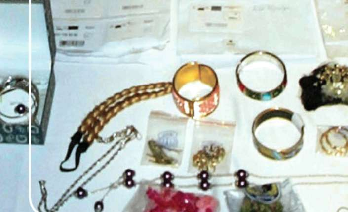
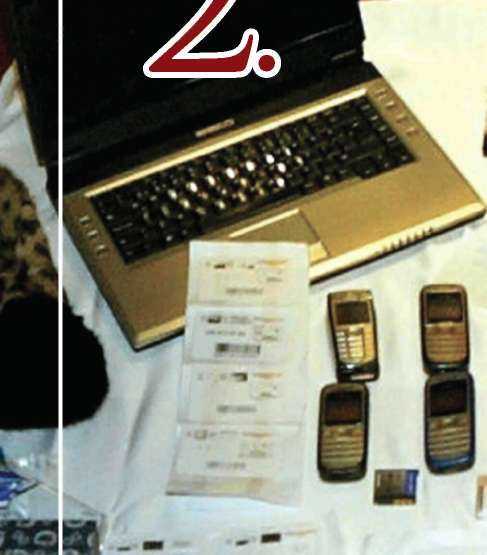
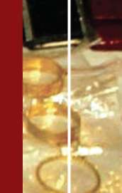
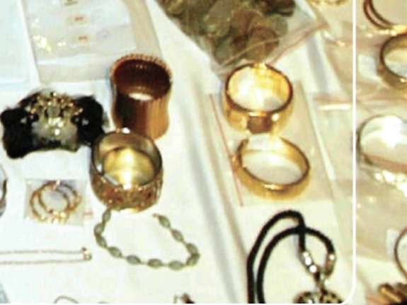

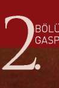
Ş EK İ L VEgEBBIİHI
'WK
İBÖLÜM
2.1 Mutemetler/Kuryelerin Gaspı
2.2 Banka ve PTT Gaspı
2.4 Kuyumcu Gaspı
2.5 Esnafların, Dükkân ve Mağazaların Gaspı 2.6 Lokantaları n/Kafelerin Gaspı
2.7 Benzin İstasyonlarının Gaspı
2.9 Kişilerin Soyulması (Yaya Gaspı)
2.10 Taksi Şoförlerinin Gaspı
2.11 Özel Otoların Gaspı
2.12 Yolcu Otobüslerinin Gaspı
2.14 Zorla Çek Senet İmzalatmak Suretiyle Gasp 2.15 Diğerleri
fi- - V-
BÖLÜM
GASP ŞEKİL VE METODLARI
2. BÖLÜM: GASP ŞEKİL VE METODLARI
Bu bölümde soruşturmacıya olayın çözümünde faydalı olabilecek gasp şekilleri ve metodları ile genel değerlendirmeler anlatılacaktır. Olayların çözümü aslında daha önce karşılaştığımız ve çözdüğümüz olaylarda saklıdır. Bu nedenle bu bölüm soruşturmacı açısından önem arz etmektedir.
2.1 Mutemetler/Kuryelerin Gaspı
Her ne vesile ile olursa olsun para teslimi veya parayı alarak hak sahiplerine havale için banka veya postanelere giren veya çıkan mutemetler/kuryeler suçluların hedefi olur.
Bazen bu suç türüne amatör suçlular da teşebbüs ederler. Fakat genellikle profesyonel olanların işidir. Bunlar bazen firma/kurum çalışanları ile işbirliği yaparak onlardan gerekli bilgiyi alırlar. (Para yatırma veya çekme zamanı, kullanılacak araç, takip edilecek yollar gibi).
Soygun derlenen bilgilerin ışığında önceden planlanır. Herkes yapacağı işe göre hazırlanır. Bu işte kullanacakları araçları genellikle önceden çalarlar, kiralarlar veya çalıntı plaka kullanabilirler. Bu araçlar, işin yapılacağı güne kadar uygun bir yerde saklanır. Sahte plakalar da takılabilir.
Mutemedin/kuryenin hareketi takip altına alınır ve araçlar müsait bir noktada park edilir. Bu sırada yakalanmayı önlemek için yardımcı elemanlar kullanılır. Bunlar uygun noktaları tutarak gözetleme yaparlar. Mutemede/kuryeye saldıracak olan kimse onu yakından takibe alır. Uygun bir durumda mutemet/
kurye silah tehdidi ile durdurulur ve elinden para çantası alınarak beklemekte olan araca binilmek suretiyle olay mahalli terk edilir.
Mutemedin/kuryenin silah tehdidi ve zorla araca alınarak kaçırılması da mümkündür. Bu durumda tenha bir yerde mutemet/kurye araçtan dışarı atılır.
Ayrıca şüpheliler genellikle silah ya da kesici alet kullanarak olayı gerçekleştirirler. Bu tür olaylarda, mağdur olarak müracaat eden şahısların, yalan beyanda bulunup parayı çalmayı hedefledikleri de izlenmektedir. Olayı kendilerine polis süsü vermek suretiyle de gerçekleştirebilirler.
2.2 Banka ve PTT Gaspı
Banka ve Ptt soygunları çoğunlukla profesyonellerin işidir. İş akıllıca planlanır. Plan gereğince bir teşkilatlanmaya gidilir. Ona göre silah, teçhizat ve araç temin olunur. Kaçış yolu ve araçları(otomobil, motorsiklet) planlanır, amaca uygun hazırlıklar yapılır. İşe girmeden önce keşif yapılır ve plan cesaretle uygulanır. İcraatın muhtelif yol ve usulleri vardır.
1. Sabah mesai saatinden önce daha memurlar gelmemişken şahıslar-dan biri kıyafet değiştirmek suretiyle bankaya gider. İçerideki güvenlik görevlisi silah tehdidi ile etkisiz hale getirerek diğer arkadaşlarını içeri alır. İçeride gizlenen diğer şahıslar memurların gelmesini beklerler. Her 25
ŞEKİL VE METODLARI
gelen memur silah tehdidi ile içeride hareketsiz tutulur. Kasayı açabilecek olanlar tamamlanınca kasa açtırılır ve içerideki paralar önceden hazırlanmış torbalara konur. Memurlar toplu olarak çıkış kapısı yanına kadar getirilir. Burada bankayı en son terk edecek olan şahıs bir gaz bombası atarak kapıyı çeker ve uzaklaşır. Gazın tesirine maruz kalanlar alarm zillerini çalmada veya polise telefon etmede gecikebilirler. Bu suretle suçlular uzaklaşmak için yeterince vakit kazanmış olurlar.
2. Genellikle çalınmış bir veya iki araç ile banka ve ptt önüne gelen suçlular araçta bir kişiyi, gözcü olarak da bir başkasını dışarıda bırakırlar, kalanlar içeri genellikle maskeli girer. Silah tehdidi ile memur ve müşterileri hareketsiz bırakarak veznelerdeki bütün paraları önceden hazırladıkları torbalar içine doldurarak bankayı terk ederler. Genellikle iz bırakmamaya özen gösterirler.
3. Yukarıda (1) numaralı paragrafta anlatılan şekilde bir soygunu tamamlamak üzere iyi korunmayan küçük banka ve ptt şubelerine geceleyin girmek de mümkündür. Güvenlik görevlisi yine usulünce saf dışı edilir ve soygun için sabah beklenir.
Bir fikir vermek için işaret olunan bu üç şeklin sayısız değişik tarzlarına rastlamak mümkündür. Genellikle gündüz iyi seçilmiş banka ve ptt şubelerine de saldırılar yapılır. Maskeli veya maskesiz soyguncular yarattıkları sürpriz tesirin sağladığı avantajla mevcut parayı alarak süratle olay mahallini terk ederler.
Kurum içerisinden bağlantılı olayların olduğu da görülür. Olay esnasında veya neticesinde rehin alma durumlarına da sıkça rastlanır. Olayda biber gazı veya göz yaşartıcı sprey kullanılabilir.
Ayrıca son zamanlarda güvenli bölgeler dışında da yaygınlaşan ptt bank şu-belerinde, daha önceden suç işlememiş olan ve genellikle yüklü miktarda borcu olan kişiler de soygun olaylarını gerçekleştirebilmektedir. Bu tip olaylarda olay yerine yakın bölgede ikamet eden veya işyeri bulunan şahıslar üzerinde araştırma yapılması olayın çözümünde fayda sağlayabilir.
2.3 Para Nakleden Araçların Gaspı
Her ne şekilde olursa olsun derlenecek bilgilerle bilhassa bankaların para nakilleri sırasında bu paralara ulaşma amaçlı soygunlar yapılır. Bu soygunlar da işin usulüne uygun düşecek tarzda önceden planlanır. Ya parayı taşıyacak araçtaki görevlilerden biri alıkonur veya parayı taşıyan araç takip edilerek uygun bir yerde durdurulur ve silah zoruyla soyulur. Araçların iyi muhafaza altına alınmaları halinde suçlular aracın yoldan çıkmasını, devrilmesini sağlayacak tertiplere de girebilirler.
Ya da yolun kritik bir noktasında takip edilen araç bu noktaya gelmeden birkaç dakika önce set koyarak veya bir başka aracı devirerek yolu kapatırlar.
Gelen araçtakileri yardıma çağırırlar. Masum görünüşlü bir kazaya yardım için 26

BÖLÜM
GASP ŞEKİL VE METODLARI
inenler silah tehdidi altında bertaraf edilmek suretiyle soygun gerçekleştirilir.
Olayı çalışan görevlilerden yardım almak suretiyle de gerçekleştirebilirler.
2.4 Kuyumcu Gaspı:
Genellikle 2-5 kişilik gruplar halinde çalışan tecrübeli kişiler tarafından yapılır. Çoğunlukla güvenliği yetersiz olan kuyumcular seçilir. Soygun için seçilen zaman sabahları malların teşhiri için kasalardan alınıp vitrinlere dizildikleri saatle ya da akşamları kasalara konmak üzere toplandığı saatlerdir. Bu işlerde uzman suçlular çoğunlukla çalıntı ve kiralık otolar, çalıntı plakalar kullanırlar.
Temel taktik soygun mahallinden uzaklaşılan otonun uygun bir yerde terk edilmesi ve diğer bir araç ile uzaklaşılmasıdır.
Silah zoru ile alınan mücevherat küçük bir torbaya konur. Polise haber verilememesi için dükkan sahibi ve içerdekiler bağlanırlar.
Soygun sırasında dükkân önünde gözcülük yapan şahıs genellikle soygunu yapanlarla aynı araca binmez. Sonradan onlarla buluşur.
Şehir merkezine uzak, fazla müşterisi olmayan, güvenlik kamerası bulunmayan ve az çalışanı olan işyerleri daha çok hedef teşkil ederler. Tanınmamak için bere ya da kar maskesi kullanabilirler.
Bu tür olaylarda biber gazı veya göz yaşartıcı sprey kullanılabilir.
2.5 Esnafların, Dükkân ve Mağazaların Gaspı: Toptan mal alımı için büyük merkezlere inen esnaflar izlenerek müsait yerlerde soyulurlar. Bunun için belirli bir zaman yoktur. Şartların elverdiği her an soygun gerçekleştirilir.
Esnaflar aldıkları malları (önem ve kıymetini hesaba katarak) naklederlerken de müsait yer ve bölgelerde önleri kesilmek suretiyle soyulurlar.
Dükkân ve Mağazalar da çoğunlukla günlük satışların hayli yüksek olduğu zaman yani kapanış saatleri seçilir. Müşteri gibi dükkân veya mağazaya girilerek soygun gerçekleştirilir. Bazen oyuncak tabancalarla dahi amaca ulaşıla-bilmiştir. Genellikle soygun sırasında içerdekiler bağlanır. Bu polisin olaydan zamanında haberdar edilememesi için bir tedbirdir. Soygunu 3-5 kişilik guruplar gerçekleştirebilir. Amatörler de bu tip soygunları yaparlar.
2.6 Lokantaların/Kafelerin Gaspı:
Tecrübesiz gaspçılar genellikle küçük yol boyu lokantaları veya çay evlerini soyarlar. Daha tecrübeli olanlar daha iyi iş yapan yerleri seçerler. Bilhassa moteller, yol boyundaki dinlenme yerleri lokantaları bunların hedefi olur. Soyguncular müşteri gibi içeri girerek siparişte bulunurlar ve yemeklerini yerken uygun fırsatı kollarlar. Kaçışlarını kolaylaştırmak için yaralamaktan hatta öldürmekten çekinmezler. Soygunu iyi planlamamışlarsa silah tehdidi ile herhangi bir aracın şoförünü kendilerini kaçırmaya yardımcı olmak için zorlayabilirler.
ŞEKİL VE METODLARI
2.7 Benzin İstasyonlarının Gaspı:
Bunlar çoğunlukla 2-4 kişilik gruplar halinde çalışırlar. Karayolları üzerindeki benzin istasyonları hedefleridir. Günün geç saatlerini tercih ederler. Sahte plakalı araçlar kullanırlar. Müşteri gibi istasyona gelerek araçlarına yakıt alırlar. Para ödemeye sıra gelince silahlarını çekerler ve görevliyi istasyona sokarak kasayı açtırırlar ve mevcudu alırlar. Soyulan yerin sahip veya işçisini bağlamayı ihmal etmezler. Kaçarken işlerini kolaylaştırmak için en ufak bir direnme halinde yaralama veya öldürmekten çekinmezler. Olaydan önce keşif yaparlar, kurbanların telefonlarını alırlar.
2.8 İkametgâhlarda Gasp:
Bazen iki bazen üç kişilik gruplar halinde faaliyet gösterirler. Zengin kişileri takip ederek evde yalnız bulunduğu sırada gizlice içeri girerek silah zoru ile soygunu yaparlar. Kurbanlarını bağlarlar. Mukavemet görmeleri halinde saldırmaktan çekinmezler.
İkamete mahsus yerlerde gerçekleşen adam soyma vakalarında, suçlu zor kullanarak ya da kargo, tüpçü, tedaş, sucu, yardım bahanesi v.b. hilelere başvurarak kişinin değerli eşyalarını almak amacıyla kurbanın evine, kurban evdeyken girer. Genelde üzerinde korku veren aletler taşıyan suçlu, kurbanları kontrol etmek üzere hazırlıklı gelir ve genelde şiddet uygular. Suçlu, ev içerisinde karşılaşacağı şiddetin derecesini bilmediği için, suçu tek başına işlemek yerine, eve birkaç kişi ile girer. Bazı ev soyguncuları içeri girmek için soruşturmacı veya polis memuru gibi davranır; diğerleri kapıyı çalabilir ve kapı açıldıktan sonra zor kullanabilir.
Evlerde gerçekleşen soygunların birçoğunda olaydan önce soyguncuyla kurban arasında bir ilişki olduğunu gösteren kanıtlar mevcut olmasına rağmen, birçok olayda da bu tür bir ilişki mevcut değildir. Kurban genelde evin yeri veya görünümü (zengin bir mahalle veya pahalı bir ev) nedeniyle seçilir veya kurbanın özel eşyalara sahip olduğu yönünde bazı göstergeler olabilir.
Örneğin, suçlu belli bir kişinin kuyumcu olduğunu veya bir diğerinin iş adamı olduğunu öğrenirse, bu bilgi seçimini belirleyici rol oynayabilir.
Ev soyguncusu genelde psikopat bir kişiliğe sahiptir ve neredeyse her zaman yanında silah veya bıçak taşır. Evde adam soyma sırasında cinayet veya tecavüz gibi diğer ağır suçlar da işlenebilir. Suçlu, kurbanla uzun süre yakın temasta olduğu için, kimliğini ele vermemesi amacıyla mağduru öldürebilir.
Ayrıca yaşlı ve yalnız yaşayan kadınların yaşadığı evler hedef seçilebilir.
2.9 Kişilerin Soyulması (Yaya Gaspı):
Kişilerin soyulmasın da muhtelif yol ve metotları kullanılır. Kimi soygunlarda kadınların veya homoseksüellerin yem olarak kullanıldığı ve kurbanlarını tenha yerlere çekerek suç ortaklarının yardımı ile soyduğu görülmüştür. Bazı 28

BÖLÜM
GASP ŞEKİL VE METODLARI
soygunlarda bankadan para çekerek çıkan kişiler izlenir ve müsait bir anda saldırılarak soyulur. Lüks oteller, lokantalar, eğlence yerleri, kumarhanelerden çıkanlar da müsait yerlerde kıstırılarak soyulur.
Kadın kılığına girmiş soyguncular kurbanlarını hazırladıkları tuzağa çekerek soyarlar. Burada önemli olan husus soyguncuların mutlak şekilde karşılaşacakları direnmeyi kırmak için yaralamak ve hatta öldürmekten çekinmeyecekleridir.
Bu vakaalar, halkın gözü önünde caddelerde yada sokak aralarında ger
çekleşen olaylardır. Tipik sokak saldırısında genç bir suçlu ve açıkça korumasız bir kurban söz konusudur.
Sokak soygunlarında birden fazla suçlu olur, tipik olarak bir kurban, soyguncular tarafından ya da güç kullanılarak sıkıştırılır. Kurbana önden ya da arkadan saldırılabilir, ve genelde yere itilir yada çekilir. Saldırı sırasında veya hemen arkasından kurbanın değerli eşyaları alınır. Saldırının hedefleri genelde kurbanın cüzdanı, para çantası, saati veya kolaylıkla görülebilen diğer eşyalarıdır. Kapkaççılığın gasp sayılıp sayılamayacağı, suçun işlenme şekline göre değişir. Genel olarak, çanta kurbanın kolundan veya omzundan hızla çekiliyorsa, ve kurban direnmiyorsa, suç kapkaç olarak adlandırılacaktır. Fakat zor kullanılıyorsa, gasp olarak adlandırılacaktır. Soyguncu genelde kurban di-reniyorsa zor kullanır.
Zor kullanan sokak soyguncuları, kapkaççılar kurbanın ciddi şekilde yaralanmasına sebep olabilir. Fiziksel olarak direnen kurbanlar çok şiddetli bir saldırıyla karşı karşıya kalırlar. Kurbanın direnmeye devam etmesi halinde el/
yumruk yanında tehlikeli silahlar kullanarak saldırıyı arttırabilir.
Tipik sokak soygunu çok hızlı gerçekleştiği için, kurban soyguncuyu detaylı olarak tanımlayamaz. Çoğu zaman kurban hiçbirşey tarif edemez. Suçlu genelde silahlı olmamasına rağmen, kurbanların önemli bir kısmı yaralanır. Sokak soygunlarının çoğunluğunda, göreceli olarak düşük miktarda para alınır.
Sokak soygunlarının çoğu akşam karanlığında veya gece gerçekleşir, olay yerinde az miktarda ışık vardır.
Sokak soygunlarının çoğunda genç, amatör bir suçlu ve rastgele seçilen özellikle ihtiyar, bayan veya savunmasız kurbanlar söz konusudur. Düşük ama önemli sayıda sokak soygununda da suçu daha deneyimli hırsızlar işler. Ara sıra soruşturmacılar kağıt para koleksiyoncuları veya üzerinde nakit para ya da de
ğerli eşyalar taşıdığı bilinen diğer yayaların soyulduğu vakalarla karşılaşır.
Sokak soygunculuğunun, kapkaççılığın oranı hızla artan bir şeklinde, ban-kamatiklerden (ATM) para çeken kurbanlar söz konusudur. Bu sokak soygunculuğu şekli ülke çapında ATM sayısının artışına oranla yayılmaktadır. Bu soygunculuk şeklinde belli bir saldırı tipinde uzmanlaşmış silahlı bir şüpheli vardır. Şüpheli bir köşede bekler ve kurbana ATM’de işlem yapmadan önce veya işlem yaptıktan sonra saldırabilir. Diğerleri, kurbanı zorla ATM’e götürüp azami miktarda para çekmeye zorlar.
ŞEKİL VE METODLARI
2.10 Taksi Şoförlerinin Gaspı:
Daha çok amatör işidir. Gecenin geç saatlerinde bir taksiye müşteri olarak binerler ve uzak bir semt adresi verirler. Müsait bir noktada silah zoru ile şoförü soyarlar. Bazıları şoförü dışarı çıkararak araç ile olay mahallinden uzaklaşır ve müsait bir yerde de aracı terk ederler. Olaylar ölümle sonuçlanabilir.
2.11 Özel Otoların Gaspı:
Bilhassa tatil aylarında karayollarında, otobanlarda, müsait noktalarda seyahate çıkmış olanların tercihen tenha yollarda yolları kesilmek suretiyle soyuldukları görülür. Gruplar halinde çalışırlar. Soygunla beraber kadınlara tecavüz ettikleri de görülmüştür.
Tek başlarına çalışan soyguncular ise kendilerinin yakın bir yere bırakılmasını isteyerek arabaya bindikten sonra işi tamamlarlar. Ya da herhangi bir bahane ile durdurdukları özel otoyu ve içindekileri silah zoru ile soyarlar.
2.12 Yolcu Otobüslerinin Gaspı:
Sık rastlanan bir soygun şekli değildir. Şehirlerarası yollarda, otobanlarda yolcu taşıyan otobüsler (Tanker ve kamyonlar da olabilir) yolların müsait olan noktaları çeşitli engellerle kesilmek suretiyle durdurularak yolcular silah tehdidi ile soyulurlar. Soyguncular genellikle para ve yükte hafif pahada kıymetli şeyleri alırlar.
2.13 İlaç Vermek Suretiyle Gasp;
Özellikle seyahat eden veya parklarda oturan kurbanlara içerisine ilaç konulan meyve suyu, kola, bisküvi v.b. şeyler ikram etmek suretiyle gerçekleştirilir. Hayat kadınları müşterilerini araçlarında, evlerinde v.b yerlerde yiyecek veya içeceklerinin içine ilaç koymak suretiyle gasp edebilir.
2.14 Zorla Çek Senet İmzalatmak Suretiyle Gasp; Mağdurun kendisi ve yakın çevresi cebir, bıçak ve silah çekilmek suretiyle veya tehdit edilerek borç altına sokulması için bir senedin imzalattırılması veya var olan bir senedin hükümsüz kaldığını açıklayan bir belgenin verilmesi, ilerde senet haline getirilebilecek bir kâğıdın imzalattırılması ve mevcut bir senedin imha edilmesi suretiyle gerçekleştirilir.
2.15 Diğerleri:
Burada temas ettiğimiz konular dışında sinema, tiyatro gişelerinde, kulüplerde, doktor veya dişçi muayenehanelerinde, depo, antrepo, rıhtım veya iskelelerde, ambarlarda ve benzeri sair yerlerde soygunlar yapılabilir. Bu soygunlar bazen içeriden temin edilen kişilerin yardımı ile bazen direkt taarruzlar şeklinde icra olunur.
BÖLÜM
GASP ŞEKİL VE METODLARI
BÖLÜM SONU SORULARI
1. Aşağıdakilerden hangisi mutemetlerin gaspı için yanlıştır?
a) Soygun ani bir kararla gerçekleşir
b) Genellikle çalıntı, kiralık veya çalıntı plakalı araç kullanılır.
c) Mutemedin/kuryenin hareketi takip altına alınır d) Mutemedin/kuryenin silah tehdidi ve zorla araca alınarak kaçırılması da mümkündür 2. Aşağıdakilerden hangisi PTT ve Banka gaspı için yanlıştır?
a) Banka ve Ptt soygunları çoğunlukla profesyonellerin işidir b) Kaçış yolu ve araçları planlanır
c) Amaca uygun hazırlıklar yapılır
d) İşe girmeden önce keşif yapılmaz
3. Aşağıdakilerden hangisi doğrudur?
a) Para nakleden araçlarda yola set koyulmaz b) Para nakleden araçlar takip edilmez
c) Para nakleden araçlar silah tehdidi ile soyulur d) Para nakleden araçlarda içeriden yardım alınmaz 31
BÖLÜM
SUÇ İŞLENME YÖNTEMLERİ
3. BÖLÜM: SUÇ İŞLENME YÖNTEMLERİ
Kurban şüphelinin kimliğini genellikle bilmediği için, soruşturmacının ilk amacı bunu ortaya çıkarmaktır. Suçun işlenme yöntemleri hırsızlık soruştur-malarında güçlü bir ipucu olarak değerlendirilir. Birçok suçlu grubunun sabit yöntemleri vardır ve hırsızlar kariyerlerinin başında, seyrek olarak saptıkları bir metodoloji geliştirirler. Hırsızlık suçunu işleyen kişi, yönteminin kimliğini ortaya çıkarmak için etkili bir yöntem olduğunu bilmedikçe, ilk hırsızlık giri
şimlerinde doğal olarak gelişen hareketlere sadık kalacaktır. Gasp ve gasp
çıların özgün kategorisine bakılmaksızın, bazı suç işlenme yöntem eğilimleri varlığını her zaman korumaktadır. Gasp olaylarının büyük çoğunluğunda şu unsurlara rastlanır:
1. Seçme prosedürleri,
2. Giriş yöntemi,
3. Güç kullanılmadan önceki ilk hareketler, 4. Güç kullanım şekli,
5. Hırsızlık objesini ele geçirme yöntemi, 6. Kaçmadan önceki hareketler,
7. K a ç ış yöntemi.
Soruşturmacı sabit olarak olaydan sonra meydana gelenleri soruşturur.
İpuçlarını ortaya çıkarmak ve suçlunun kimliğini öğrenmek için, suçlunun hareketleri ilk hareketten olay sonuna kadar izlenmelidir. Gasp tipik bir sokak hırsızlığından başka bir şeyse, suçu işleyen bazı seçme süreçleri izlemiş demektir. Bu prosedürler banka gözlemlerinden, bir benzin istasyonunun iki dakika süreyle gözetilmesine kadar değişir. Soruşturmacının cevaplamaya çalışmak zorunda olduğu soru, suçlunun neden ve nasıl kurban veya yer seçtiğidir.
Bu sorunun cevabı zordur ve ek bilgi elde edilemez veya suçlu yakalanamazsa soru genelde cevapsız kalır. Kurbanın seçilme nedeni görünümü olabilir, olay yeri de sadece özelliği yüzünden seçilebilir. Gasptan önce gözlem yapıldığına inanılıyorsa, dikkatli bir yakın çevre soruşturması yapılmalıdır. Komşular, dükkan sahipleri veya olayın gerçekleştiği sırada o alanda olan herhangi bir kişi, şüpheli kişiler veya otomobil görüp görmedikleri konusunda sorgulanmalıdır.
Bu soruşturmaların başarısı verilen tanımların yeterliliğine bağlıdır.
Seçme prosedürünün tespitinden sonra soruşturmacı giriş yöntemini bulmaya çalışır. Şüpheli dükkana silahını göstermeden mi girdi? Veya şüpheli yüzü gizli veya maskeyle mi girdi? Daha sonra, gaspçının bunun bir soygun olduğunu söylemesinden önceki hareketleri belirlenmelidir. Gaspçı nasıl davrandı? Genelde yiyecek dükkanlarını soyanlar, müşteri gibi davranır ve dükkanın boşalmasını bekler. Banka soyguncuları lobinin ortasında bir masaya doğru yürür ve makbuz yazar gibi davranır yada başka bir harekette bulunur.
Bu hareketler genelde sabittir ve sonraki olaylarda da tekrarlanır.
ÖLÜM
UÇ İŞLENME YÖNTEMLERİ
Güç kullanılması suçun işlenme yöntemi için çok önemlidir.Olay sırasındaki bu hareket kurbanın en çok hatırladığı olaylardan biridir. Soruşturmacının, suçlunun bunun bir gasp olduğunu nasıl gösterdiğini bilmesi gerekir. Şüpheli kurbana silah göstererek “bu bir soygundur” mu dedi yoksa kurbana sesini çıkarmaması gerektiğini söyleyen bir not mu verdi? Para veya eşyanın alınma şekli normalde kurban tarafından memura tarif edilebilir. Fakat bazı olaylarda, şüpheli kurban ve tanıkları arkasına dönmeye veya suç objesi alınırken yüzüstü yere yatmaya zorlayabilir. Genelde, şüpheli kurbanını parasını vermek üzere yönlendirir veya para ya da eşyayı yardım almadan bizzat alır. Suçlunun kaçış hareketleri benzer şekilde saptanır. Kurbandan parayı alan veya bizzat kendi alan suçlu kapıya doğru gidip kurbanı yerinde kalması ve takip etmeye kalkmaması konusunda tehdit etti mi? Son olarak çok önemli bir suç işleme yöntemi faktörü ve ipucu belirlenmelidir. Suçlu olay yerinden nasıl uzaklaştı?
Kurban ve/veya tanıklar bu konuda bilgi verebilir veya yakın çevre soruştur-masıyla bilgi elde edilebilir.
Soruşturmacının tüm suç işleme yöntemlerinin her birine ilişkin cevaplara ulaşması pek mümkün değildir. Fakat herhangi bir bilgi mevcut suç ile geçmiş
veya gelecek olaylar arasında bağlantı kurmakta yardımcı olabilir. Belli bir olayda tespit edilen yöntem bilgisi benzer gasp yöntemleriyle karşılaştırılarak, eski suçlular,sabıkalılar, söz konusu olay için olası şüpheliler olarak kontrol edilebilir.
BÖLÜM
SUÇ İŞLENME YÖNTEMLERİ
BÖLÜM SONU SORULARI
1. Aşağıdakilerden hangisinde gasp olaylarının büyük çoğunluğunda rastlanan unsurlardan değildir?
a) Seçme Prosedürü
b) Giriş Yöntemi
c) Güç Kullanım şekli
d) Kıyafet
2. Seçme prosedürü nedir?
a) Gasp yapılacak yerin seçilme şekli
b) Gasp yapma şekli
c) Olay yerine giriş şekli
d) Kullanılan gücün şekli
3. “Bu bir soygundur” hangi prosedüre uyar?
a) Giriş Yöntemi
b) Güç kullanım şekli
c) Seçme Prosedürü
d) Olay yerine giriş şekli
B- H
BÖLÜM
4.1 Profesyonel Sürekli Suçlular
4.2 Amatör Aralıklı Suçlular 4.3 Özel amaçlı suçlular
BÖLÜM
SUÇLU ÖZELLİKLERİ
4. BÖLÜM: SUÇLU ÖZELLİKLERİ
Gasp suçu çoğunlukla erkeklerin baskınlığı altındaki bir suçtur; yakalanan şüphelilerin çoğunluğu erkektir.
Genel açıdan, suçluların suç davranışlarını motive eden etkenlerde bir de
ğişiklik gözlenmektedir. Araştırmalar, tüm suçluları ya da bunların önemli bir kısmını karakterize edecek bir model olmadığını göstermektedir. Fakat gasp suçluları genel olarak aşağıdaki kategorilerde sınıflandırılır: 1. Profesyonel sürekli suçlular,
2. Amatör aralıklı suçlular,
3. Özel amaçlı suçlular.
4.1 Profesyonel Sürekli Suçlular
genel olarak gasp suçunu hayatlarının işi olarak görür. Bu suçlular hayatları boyunca sayısız suç işlerler ve genelde suçluların en cesur ve “maçoları” oldukları izlenimini bırakırlar. Bu tür imajlar şüphesiz göz alıcı olmasına rağmen, profesyonel suçlu grubu içerisinde göreceli olarak yüksek bir statü sahibidir. Tüm suçluların sabıka kayıtları dolu olmasına rağmen, sadece üçte biri profesyonel sürekli suçlu olarak tanımlanmaktadır. Ayrıca bu tür suçluların profesyonel olmayan suçluların on katı suç işlediği ortaya çıkmıştır.
4.2 Amatör Aralıklı Suçlular
Bu tip suçlular gasp suçunu çok sık işlemez. Gaspçılar kazanç potansiyelleri bilinen kurbanlara saldırırken, amatör suçlular kurbanlarını rastgele seçer. Açık şekilde korunaksız olan kurbanları, örneğin kadınları veya yaşlı insanları seçerler. Sonuç olarak, silahlı olma eğilimleri düşüktür, genelde zor kullanırlar.
4.3 Özel Amaçlı Suçlular
En düşük nüfuslu gaspçı grubunu oluşturur. Başlı başına para kazanmanın ötesinde belli bir amaca ulaşmak için gasp yaparlar. Uyuşturucu veya kumar alışkanlıklarını desteklemek amacıyla gasp yapabilirler. Küçük bir kısmı sadece kurbanın korkusundan duyulan psikolojik haz nedeniyle gasp yapar. Özel amaçlı suçlular genelde ilk kez suç işlemektedir. Geçmişlerinde suç işlemiş-lerdir ama gaspı tercih ettikleri suç olarak benimsememişlerdir. Özel amaçlı suçlular (kurbanın korkmasından haz alanlar dışında) silahlı gaspın karşı karşıya temasından hoşlanmaz. Amaçlarına eşya suçu aracılığıyla ulaşmayı tercih ederler, ama genelde bu tür bir suç işlemek için gerekli yeteneğe sahip değildirler.
Soygun suçluları açıkça şiddet suçluları olarak sınıflandırılır, çünkü kurbanla doğrudan temas veya gizlice yaklaşma içeren suçları tercih etmektedirler. Bu tür suçlular genelde eşya suçundan ziyade gasp taraftarıdır, çünkü 37
ÖZELLİKLERİ
gasp ederek adam soyma şiddet eğilimli kişiliklerine uygun düşmektedir. Tüm adam soyma kurbanlarının üçte birinin yaralandığı gerçeği, suçun şiddet içeriğinin altını çizmektedir. Diğer çalışmalarda adam soymayla özdeşleştirilen şiddeti belgelemektedir.
Cinayet şüphelileri dışında, gaspçılar diğer şiddet suçlularından daha çok silah kullanma eğilimine sahiptir.
Bazı şahısların sigortadan para alma, iş ortağından ve aile fertlerinden para kaçırma veya statü kazanma sebebiyle kendilerinin tuttukları şahıslar aracılığıyla kendi kendilerini soydurdukları olaylarda gözlemlenmiştir.
BÖLÜM SONU SORULARI
1. Aşağıdakilerden hangisi suçlu özelliklerinden değildir?
a) Profesyonel sürekli suçlular
b) Amatör aralıklı suçlular
c) Güç Kullanım şekli
d) Özel amaçlı suçlular
2. Aşağıdakilerden hangisi Profesyonel sürekli suçluların özelliklerinden-dir?
a) Genel olarak gasp suçunu hayatlarının işi olarak görür b) Genelde suçluların en cesur ve “maçoları” oldukları izlenimini bırakmazlar c) Yüksek bir statü sahibi değildirler
d) Profesyonel olmayan suçluların on katı suç işlerler
ŞÜPHELİNİN TESPİTİ ÇALIŞMALARI
BÖLÜM
•M
5.1 Soruşturmanın Olaylara Yaklaşım Tarzı 5.2 Gasp Olayları Soruşturma Tekniği
5.3 Şüphelinin Tespiti
5.3.1 Masa Başı Çalışmaları
BÖLÜM
ŞÜPHELİNİN TESPİTİ ÇALIŞMA
5.BÖLÜM: ŞÜPHELİNİN TESPİTİ ÇALIŞMALARI
5.1 Soruşturmacının Olaylara Yaklaşım Tarzı Gasp ve soygun olayları konusunda soruşturmacı açısından bazı noktaların göz önünde bulundurulması gerekmektedir.
Gasp veya soygunda temel konu bir zorlamanın bulunması veya bir kimse için endişe yaratacak durumun mevcudiyetidir. Kendisine veya yakınlarına gelebilecek bir tehlikenin mevcudiyetidir. Konumuz meselenin hukuki açıdan tartışılması değildir. Pratik yönden soruşturmacı için yardımcı olacak faktörler ve soruşturma tekniklerinin belirlenmesidir. Bu bakımdan önemli olan husus; 1. Malın zorla veya tehditle alınmış olması, 2. Malın ya kişinin üzerinden ya da muhafaza ettiği yerden alınması, 3. Malın kişinin rıza ve muvafakati olmaksızın ya şiddet, zorla ya da kişiyi bir tehlike ve korkuya maruz bırakmak suretiyle alınmış olması gereğidir.
Gasp veya soygun süsü verilen olaylarda, bu noktalar soruşturmacı bakımından önem arz eder. Bu faktörlerin, şartların elverişliliği ölçüsünde en iyi şekilde değerlendirilmesi ve araştırılması gereğine hadisenin gerçek yönünü ortaya koyabilmek için soruşturmacının önem vermesi ve hiçbir zaman unutmaması gerekir.
5.2 Gasp Olayları Soruşturma Tekniği
Genelde gasp olaylarının polise intikali suçun işlenmesinden çok sonra olur. Bu nedenle de hırsızlık soruşturmasında yararlanılan tekniklerden pek çoğu gasp soruşturmasında da geçerlidir.
Soruşturmacı şikâyeti ilk aldığı kişiden veya kurbanlardan her türlü bilgiyi ilk fırsatta elde etmelidir.
5.3 Şüphelinin Tespiti
5.3.1 Masa Başı Çalışmaları
- Polnet proje sorguları, (KIHBI, Tahdit Yolcu Kayıtları, Kimlik Paylaşım Sistemi, Araç Tescil, Sürücü, Geçici İkamet Yerleri Konaklama, Pasaport, Silah Ruhsat, Yeşil Kart v.s.)
- Hastane ve eczane kayıtları (Sosyal Güvenlik Kurumu),
- Suç Analiz Merkezi sorguları,(Daha önce meydana gelmiş benzer olaylar ve şüphelileri)
- Suç kayıtları,
- UYAP sorgusu,
- İnternet üzerinden sorgu yapılması,
- Telekom, Tedaş, Sular İdaresi ve şirketlerin veri tabanındaki kişisel bilgilerin araştırılması, 41
ŞÜPHELİNİN TESPİTİ ÇALIŞMALARI
.
- Ankesörlü telefon kartları, toplu taşıma abonelik bilgileri,
- HTS çalışmaları,
- Teknik takip çalışmaları,
- Şüphelilerin fotoğraflarının tutulduğu defterin mağdura, mağdurlara ve varsa tanıklara gösterilmesi,
- Kurum çalışanlarının olay sonrası hesap hareketlerinin incelenmesi,
- Olayın gerçekleşmesinde kullanılan metodun iyi analiz edilmesi,
- Nakil aracındaki görevlilerin çalışmış olduğu iş yeri arkadaşlarının ekonomik durumları ve hesap hareketlerinin araştırılması,
- Mağdur ve yakınlarının banka hesapları ve ekonomik durumlarının incelenmesi,
- Mağdura şüphelinin ya da şüphelilerin robot resminin çizdirilmesi, 5.3.2 Sokak Çalışmaları
- Tanıkların beyanları,
- Şüpheli veya şüphelilerin sayısı,
- Çalınmış eşyalar,
- Kullanılan suç aletleri,
- Şüphelinin izlemiş olduğu güzergâhtaki izler ve görüntüler,
- Şüpheli yaralı mı değil mi?
- Mağdurun elbiseleri, iç çamaşırları, tırnak ve vücudundaki izler,
- Olay yerindeki karakteristik tozlar, toprak kalıntıları, lastik izleri vs.
- Olay yerindeki kan izleri, parmak izleri, kıl, tükürük vs. DNA çözümüne yarayacak diğer izler,
- Varsa olayda kullanılan motorlu aracın, renk, model, tip ve plaka numarası, vs.
- Olay yerine yakın kamera görüntüleri,
- Olay yerinde bulunan seyircilerin kamera ile tespiti,
- Tanık veya meraklıların konuşmalarının tespiti,
- Mahalli araştırmalar,
- Akaryakıt İstasyonları kayıtları,
- Terminal kayıtları, (Tren, Otobüs, Uçak)
- Deniz taşımacılığı kayıtları,
- Oto Kiralama ve Ticari Taksi kayıtları,
- Karayolları kayıtları,
- Olay yerinde mümkünse “Cell” çalışması,
- Olay meydana gelmeden önceki zamanlarda şüpheli hareketler,(Takip ve izlemeler)
- Bölgede ki şüpheli şahıslar,
BÖLÜM
ŞÜPHELİNİN TESPİTİ ÇALIŞMA
- Konu ile ilgili olarak gelen ihbarların değerlendirilmesi,
- Eşkal tespit çalışmaları ( fiziksel özellik, şive, kullanılan araç vs. )
- İhbarın ilk geldiği anda haber merkezinin ve yetkili bir amirin kapama noktaları ile şehrin giriş çıkışlarının kapattırılması,
- Rehin alma durumlarında müzakereci personelin kullanılması,
- Olaylarda bere ya da kar maskesi kullanılmış ise, atılabileceği var sayılarak kaçış istikametinde çöp kutuları ve boş arsalarda araştırma yapılması, eğer bere ya da kar maskesi bulunursa, delil niteliği değerlendirilip kriminal inceleme yapılması,
- Bazı gasp şekillerinde mağdur, şüpheli olarak değerlendiriliyorsa, olay öncesinde, olay anında ve olay sonrasında yaptığı telefon görüşmelerin incelenmesi,
- Mağdur, şüpheli olarak değerlendiriliyorsa mağdurun fiziki takibinin yapılması,
- Bu tip olayları sabit bir ekibin takip etmesi,
- Kuyumcu gasplarında, kuyumcular odası ile irtibat kurularak yağma edilen malın satılması muhtemel işyerleri üzerinde araştırma yapılması,
- Olay yerindeki bütün deliller üzerinde araştırma yapılır ve şüphelinin kim olduğu tespit edilmeye çalışılır.
BÖLÜM SONU SORULARI
1. Aşağıdakilerden hangisi masa başı çalışmalarından değildir?
a) Suç kayıtları
b) UYAP sorgusu
c) HTS çalışmaları
d) Kullanılan suç aletleri
2. Aşağıdakilerden hangisi sokak çalışmalarından değildir?
a) Kullanılan suç aletleri
b) Tanıkların beyanları
c) Mahalli araştırmalar
d) Suç kayıtları
BÖLÜM
SORUŞTURMADA DİKKAT EDİLMESİ GEREKENLER
BÖLÜM
SORUŞTURMADA DİKKAT EDİLMESİ
6.1 Soruşturmada Dikkat Edilmesi Gereken Kurallar 6.2 Soruşturmada Dikkat Edilmesi Gereken Hususlar 6.3 Soruşturmacının Özellikleri Ve Yapması Gerekenler 6.4 Soruşturma Dosyalarının Düzenlenmesi
BÖLÜM
SORUŞTURMADA DİKKAT EDİLMESİ GEREKENLER
6. BÖLÜM: SORUŞTURMADA DİKKAT EDİLMESİ GEREKENLER
Soruşturmacı her münferit olayı yeni bir konu olarak ele almalı, dikkat ve itina ile incelemelidir.
Suçlunun, suçunu ispat etmek kadar, masum insanların vicdanını rahatlatmak ve uğradığı zarardan en az zararla kurtarmak soruşturmacının görevleri arasındadır.
Her münferit olay kendi şartları içinde değerlendirilmeli, olaya katılanlar da dahil olmak üzere olay eksiksiz olarak tüm yönleri ile incelenmeli, gerçeğe ulaşmak zorunluluğu hiçbir zaman unutulmamalıdır. Tek bir bakış açısı soruş-turmacıyı kesin kanaate götürmemelidir. Her delil, olayın tümü içinde orantılı şekilde ilgi ve irtibatı ile yerine oturtulmalı ve olayda kim -neden- nasıl- niçin-
ne zaman- nerede- ne ile sorularına kesin cevaplar bulunmalıdır. Ancak bu şekilde suç ve suçlu ilişkisi sağlanabilir.
Gasp olayları soruşturmacı birimlerin karşılaşabileceği önemli olaylardandır. Bu yüzden bir gasp olayı meydana geldikten sonra yapılması gerekenlerin sistematik bir şekilde planlanması ve soruşturmacıların olaylar üzerinde dikkatli ve titiz çalışması gerekir.
6.1 Soruşturmada Dikkat Edilmesi Gereken Kurallar
- Şüpheli bir şahıs yakalandığı zaman şahsın can güvenliği sağlanmalı ve hakları kendisine okunmalıdır.
- Yakalama esnasında yakalanan kişiyle kesinlikle mülakat yapılmamalıdır.
- Yakalama yapan ekiple soruşturma yapan ekibin imkan varsa aynı ekip olmasına dikkat edilmelidir.
- Olayın her safhasında Cumhuriyet Savcısı ile diyalog halinde olunmalıdır.
- Soruşturma esnasında avukatlar ile olan diyaloglarda, avukatın ifade alma safhasındaki görevleri iyi bilinmelidir. Kanunların verdiği yetki ve sorumlulukların dışına çıkılmamalıdır.
- Şüpheli şahısla mülakat yapmadan önce, şüphelinin kişiliği ve karakteri iyi analiz edilmelidir.
- İfade alma safhasında, soru cevap şeklinde olayla ilgili soru çatısı oluşturulmalıdır.
- Soruşturma dosyasında bulunması gereken evraklara dikkat edilmelidir. Yakalama, üst arama, ifade tutanakları, sanık hakları formu, avukat görüşme tutanakları, telefon görüşme tutanakları, giriş, ara ve çıkış ra-45
BÖLÜM
SORUŞTURMADA DİKKAT EDİLMESİ GEREKENLER
porları, ekspertiz raporları, adliyeden alınan yazılı arama emirleri, arama tutanakları, savcı ile telefon görüşme tutanakları, GBT sonuçları, olay yeri inceleme raporları, teşhis tutanakları, elkoyma veya muhafaza altına alma tutanağı, ek suç sicil kayıtları gibi.
- Ek gözaltı süresi alınan durumlarda, gözaltına alınan şahısların gözaltı süresi boyunca raporları alınmalı, yakınlarına haber verilmeli, mümkünse gözaltı süresi bitmeden adliyeye sevk edilmelidir. Ek gözaltı mutlaka şüphelilere tebliğ edilmelidir.
- Gözaltında bulunan şahsın aile geçmişi araştırılmalıdır. Görüşme esnasında yapılan bu inceleme suçlu profili açısından çeşitli ipuçları verebilir.
- Gözaltı süresince şüphelinin müdafiden faydalanması sağlanmalıdır.
- Mülakat odası saydam ve teknik izlemeye uygun olmalı, içeride fazla eşya ve iletişim araçları bulunmamalıdır.
- Soruşturmada teknik hizmetlerden azami derecede faydanılmalıdır.
6.2 Soruşturmada Dikkat Edilmesi Gereken Hususlar
- Soruşturma bilgileri mağdur veya maktül yakınları ile asla paylaşılmamalıdır. Onların da şüpheli olabileceği unutulmamalıdır.
- Elde edilen bilgiler ilgisiz kişilere (meslektaş, vatandaş vs.) söylenme-melidir. Sızmalara karşı dikkatli olunmalıdır.
- Faili meçhul dosya belirli periyotlarla yeniden okunmalıdır. Dosyada mutlaka gözden kaçırılmış, yeni şeyler bulanacağı unutulmamalıdır.
- Bir gasp olayında yapılması gerekenler not haline getirilmeli, bu not her memura verilmeli, yanında taşıması ve yapılması gerekenleri unutmaması için kullanması söylenmelidir.
- Alınan bütün ifadeler dikkatli okunmalı ve analiz edilmelidir. Yalan ifadeler senaryolardan ibarettir. Yalan ifadeyi veren kişiler, özellikle şüpheliler senaryolarını etrafındaki kişilerden almaktadır. İfadeler birbirleri ile kıyaslanmalı, çelişkiler ortaya çıkartılmalıdır.
- Sokak çalışması ile teknik çalışma birlikte yürütülmelidir.
- Gasp mahallinde inceleme bitip ayrılırken mutlaka olay yerine bir veya iki gün süre ile bir ekip bırakılmalıdır. Sonradan delil elde edebileceği, şüphelinin veya olayla ilgisi olabilecek başka şahısların olay yerine tekrar gelebileceği, unutulmamalıdır.
BÖLÜM
SORUŞTURMADA DİKKAT EDİLMESİ GEREKENLER
6.3 Soruşturmacının Özellikleri ve Yapması Gerekenler
- Gasp soruşturmacısı, soruşturma yaparken titiz, dikkatli ve sabırlı olmalıdır. Olaya ilişkin bütün detayları incelemeli, acele davranmamalıdır.
- Bütün delillerin toplanmasına dikkat etmeli, soruşturmanın her safhasından bilgi sahibi olmalı, tanık, mağdur ve şüpheli mülakatları konusunda eğitimli ve dikkatli olmalıdır.
- Soruşturmacı olay yerini kesinlikle canlı görmelidir. Olay yerini gören soruşturmacının ifadeyi alması tercih edilmelidir.
- Delil olabilecek her şeye dikkat etmeli, olay yerinde bulunan kişileri not etmelidir.
- Olayı delillendirmeye aralıksız devam etmelidir.
- Soruşturmacı tahkikatı yürütürken, delillerin değerlendirilmesi ve çözüme ilişkin irtibatların kurulması noktasında olay yeri inceleme ekipleri ile koordineli çalışmalıdır.
- Soruşturmacı şüphelileri eleme yaparken, iletişim becerileri konusunda bilgisi olmalı, itham ve iddiaların doğruluğunu iyi araştırmalıdır.
- Soruşturmacı tanıklarla diyalog kurarken, güven vermeli, ikna metotları denemeli ve tanıkların verdiği tüm bilgilerin eksiksiz alınmasına çalışmalıdır.
- Tanığın ifadesi alınırken algıda seçicilik göz önünde bulundurularak beyanlarını aynen geçmeli, soruşturmacı kişiye kendisindeki bilgilerle yön vermemelidir.
- Faili firar olaylarda şüpheli yakınları ile diyalog kurarken, sürekli temas halinde olunmalı ve sanıkla ilgili bilgilerin gizliliğinin korunmasına dikkat edilmelidir.
6.4 Soruşturma Dosyalarının Düzenlenmesi
Dosya içeriği, sonradan dahil olacak bir soruşturmacının ilk soruşturmacı gibi konuya vakıf olacak şekilde hazırlanmalıdır. Dosyada, yapılan her çalışmayla ilgili bilgi ve belge olmalı, dosya kapağında fihrist oluşturularak dosya içeriği belirtilmelidir.
Dosyada Bulunması Gerekenler;
- Dosya dış kapağında; Olay tarihi, mağdur/müşteki adı, olay yeri, olay saati, Olayı Savcısı, Hazırlık Numarası
- Dosya iç kapağında; mağdur/müşteki ve şüpheli fotoğrafları
- Dosya içerisinde; Bilgi formatı, ilk olay raporu, olay yeri inceleme raporu ve cd ortamında olay yeri görüntüleri, mağdur/müşteki ve şüpheli 47
BÖLÜM
SORUŞTURMADA DİKKAT EDİLMESİ GEREKENLER
suç kayıtları, tüm ifadeler, firari dosyalar için şüphelinin vukuatlı nüfus sureti, firari şüphelinin aile bireylerinin telefon numaralarını belirtir rapor, tüm yazışmalar ve cevapları, yapılan çalışma notları, yapılan mülakat notları, karakollara giden kriminal ve ekspertiz raporları, HTS
raporlarının analiz notları, olay ekibinin çalışma raporu, yakalama müzekkeresi, cezaevi teslim kağıdı, ekiplerin ajanda notları ve varsa robot resim bulunmalıdır.
1. Aşağıdakilerden hangisi soruşturmada dikkat edilmesi gereken kurallardan değildir?
a) Yakalama esnasında yakalanan kişiyle kesinlikle mülakat yapmamalıdır b) Yakalama yapan ekiple soruşturma yapan ekibin imkan varsa aynı ekip olmasına dikkat edilmelidir
c) Şüpheli şahıslarla mülakat yapıldığı esnada, şüphelinin kişiliğini ve karakterini iyi analiz edilmelidir
d) Mülakat odasına cep telefonu ile girilmelidir 2. Aşağıdakilerden hangisi soruşturmada dikkat edilmesi gereken hususlardan değildir?
a) Soruşturma bilgileri mağdur veya maktül yakınları ile asla paylaşılmamalıdır
b) Elde edilen bilgiler ilgisiz kişilere (meslektaş, vatandaş vs.) söylenmelidir c) Faili meçhul dosya belirli periyotlarla yeniden okunmalıdır d) Alınan bütün ifadeler dikkatli okunmalı ve analiz edilmelidir
BÖLÜM
HTS İNCELEMELERİ
/ H T S İNCELEMELERİ
7.1 HTS’nin İncelenmesinde Dikkat
7.2 HTS’lerin İncelenmesindeki Genel
-
gT Ulllr
rı*tll(l 4001 (OFAİ) ıj
lAC I S l l (0S£7]
Hel 262 02 (UCDHA)
Hdme }«U4(M A
SiOndl 100 * -79 dBm
31159 tl-Zen«r\m (IJHTSJ
BÖLÜM
HTS İNCELEMELERİ
7. BÖLÜM: HTS İNCELEMELERİ
Değişen ve gelişen teknoloji sayesinde insanlar ekonomik rahatlığa kavuş-makla beraber teknolojinin nimetlerinden faydalanır hale gelmiştir. Bu nimet insanlar açısından rahatlık ve kolaylığı da beraberinde getirmiştir. Artık toplum oturduğu yerden her türlü bilgiye ulaşmaktadır. Bu bilgi internet, televizyon, telefon vs. yoluyla elde edilmektedir. Bilgiye ulaşımdaki kolaylık teknolojinin her yerde kullanılmasını da beraberinde getirmiştir. İnsanlar artık bir tane cep telefondan ziyade birkaç tane cep telefonu kullanmaya başlamıştır.
Bunun sebebi insanların birbirleri ile arasında ki irtibatı kolay ve ucuz sağlamak istemesinden kaynaklanmaktadır. Bu durum polisin birtakım bilgilere kolay ulaşmasını sağlamaktadır. Meydana gelen olaylarda artık polis kişilerin telefonları üzerinden araştırma yapmakta, yaptığı bu araştırmalarla kişiyi rahatlıkla tanıyabilmektedir. Cep telefonu üzerinden bu tanıma işleminin nasıl yapıldığı önem arz etmektedir. Bir kişinin telefon konuşmalarını analiz eden iyi bir analizci, o kişinin yaşantısını rahatlıkla ortaya koyabilmektedir.
Bu nedenle biz HTS’lerin ne kadar önemli olduğunu anlayabilmekteyiz. Bu bölümde telefon analizi üzerinde kısaca durmak istiyoruz.
HTS, “Historical Trafficing Search” olarak açılır. Tarihsel iletişim araştır-ması anlamını taşımaktadır. Yani geçmişe yönelik yapılan bir araştırmadır. Yapılan araştırmanın bir analizci tarafından analiz edilmesi sayesinde, mevcut olaya dönük çözüm stratejileri oluşturmada fikirler ortaya koymaktadır. Bu da mevcut olay karşısında soruşturmacının senaryolarının doğruluğunu güçlendirir veya düşürür. Soruşturmacı önündeki senaryolara bakarak olayın çözümüne doğru yol almaya başlar. Bu nedenle kişinin HTS raporları soruşturmacı tarafından önemlidir.
Telefon analizleri ile ilgili bir takım teknik ayrıntılara burada yer vermeyece-ğiz. Ancak bu bilgiler eğitim esnasında verilecektir. Soruşturmacıların önünü açması açısından bir takım genel bilgileri aktarmayı düşünüyoruz.
Bir olayın çözümüne yönelik HTS’ler incelenirken dikkat edilmesi gereken kurallar nelerdir? Biz burada bunlara değineceğiz.
7.1 HTS’nin İncelenmesinde Dikkat Edilmesi Gereken Hususlar HTS’leri iyi incelemek olayın çözümene ışık tutacak birtakım bilgilere ulaşmayı sağlar.
Bu nedenle;
- En sık görüşülen kimseler, (Arkadaş, eş, dost ve samimiyeti belirtir.)
- Uzun süreli telefon konuşmaları?, Sık mesajlaşmalar?, Geceleri telefonla sık ve uzun görüşmeler?, (Sevgiliyi işaret edebilir.) 51
BÖLÜM
HTS İNCELEMELERİ
- Gezilen şehirler, (İş adamımı? vs.)
- Geceleri dışarı çıkmalar,?
- Gün içerisinde arka arkaya telefon görüşmeleri ? ( sıkıntı izleri, borç, alacak -verecek, vs.),
- İkamet ettiği şehir dışında başka şehirlerden birileri ile konuşmalar?,
- Telefonun açıldığı ve kapatıldığı günlerin durumu (şüphe),
- Geceleri geç saatler ile gündüzleri erken saatler de ki sık verilen baz istasyonlarının durumu, (ev, işyeri, gece dışarıda kalmalar vs.)
- Daha önce görüşmediği ancak son zamanlarda görüştüğü kişiler,
- Geceleri bir defa görüştüğü kişiler,
- Sürekli telefon hattı ve cep telefonu değiştirmeleri?,
- Kullanılan cep telefonu ve hat sayısı,
- Değiştirilen telefonların ve hatların durumları,
- Ortak irtibatlar,
- Görüşme tarih ve zamanların durumu,
- Gün içerisinde görüşme trafikleri,
- Görüşme süreleri,
- Şüphelinin olaydan önceki rutin görüşmelerine, bakılması soruşturmacıya bir takım fikirler verecektir.
7.2 HTS’lerin İncelenmesindeki Genel Bilgiler Telefonların incelenmesinde bir takım kurallar koymak yanlış olur. Biz sadece burada bir takım bilgileri vereceğiz.
Dikkatli şekilde;
- Görüşme trafiğindeki sürelerin durumlarına,,
- Görüşmelerin zamanlarına,
- Gezdiği yerlere,
- Geceleri telefonla görüşmelerine,
- Mesajlaşma sıklıklarına,
- Adreslerine,
- Abone bilgilerine bakınız.
Bu bölümde saymış olduğumuz hususlar bir takım programlar vasıtasıyla yapılmaktadır. Bu programların kullanılması, en kısa zamanda en doğru bilgiye ulaşmayı sağlar. Bu programlar ayrı bir eğitim ve uzmanlık konusu olduğundan kitapçıkta bahsetmeyeceğiz.
BÖLÜM
HTS İNCELEMELERİ
Ya p ılan her HTS incelemesi, Polis Kriminal Sistemlerinden ve internetten doğrulanmalıdır. Sonuç olarak iyi bir HTS incelemek iyi çözüm yolları bulmayı sağlar. Dolayısıyla “neye bakacağını bilemezsen neyi bulacağını bilemezsin” .
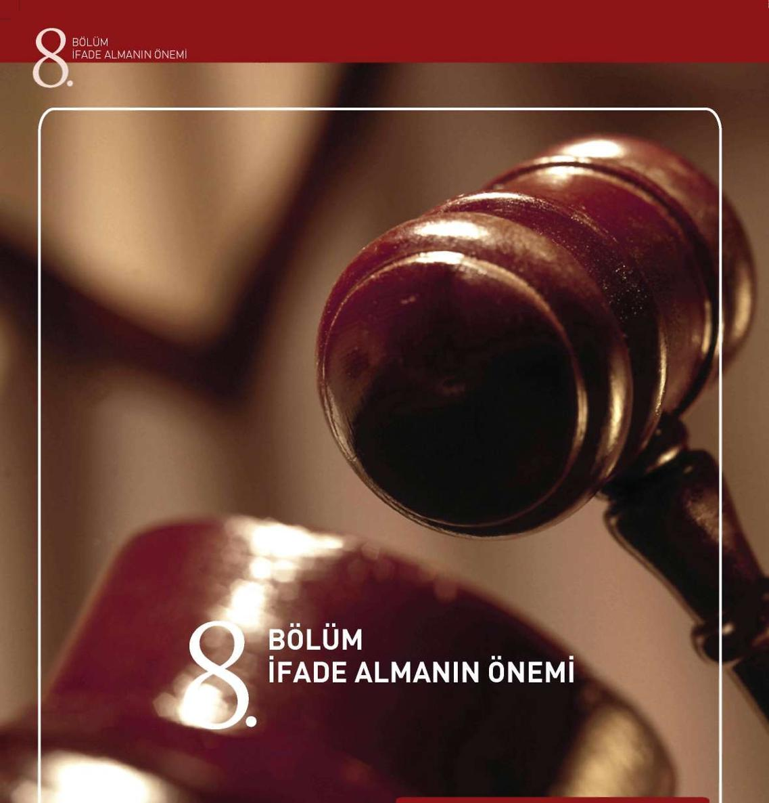
Iğü İşlemlerde İfade
Almanın Önemi
İfade Almada Algılamanın Önemi
Çağdaş İfade Alma Yönteminde İletişim
- fc.iL!
- - .
BÖLÜM
İFADE ALMANIN ÖNEMİ
8. BÖLÜM: İFADE ALMANIN ÖNEMİ
Bu bölümde soruşturmacıya faydalı olacak ifade alma tekniklerine geniş
bir bakış açısı ile bakılacaktır. İfade alma teknikleri gasp suçlarında büyük önem arz etmektedir. İfadesini aldığınız şüpheli yargılama sırasında TCK’da sayılan cezalardan ağır olanları ile cezalandırılacağından, İfade işleminde, azaltıcı ve ağırlaştırıcı sebepler üzerinde dikkatli şekilde durulmalıdır. Bazen soruşturmalarda maddi delil bulunmadan sadece tanık ve şüpheli beyanları ile tahkikat yapılmakta ve şüpheliler bu beyanlara göre cezalandırılmaktadır.
Bu da ifadenin ne denli önemli olduğunu göstermektedir. Bu bölümde geniş
olarak ifade alma teknikleri incelenecektir.
İfadesi alınan şahıslarda verilen her ifadenin kendine ait bir içyüzü bulunmaktadır.
Olayın;
- nasıl,
- neyin,
- ne kadar güçlü,
- ne kadar net,
algılanıp algılanmadığı,
- şahsi aktifleştirme,
- uyarının türü,
- kendi öğrenme süreçleri ve deneyimleri,
- gerekçeler, arzular, çıkarlar,
- beklentiler ve hafıza ile yakın bağlantıda bulunmaktadır.
Sonuçta verilen ifadenin güvenirliği, şahsi etkilenme faktörlerine bağlıdır.
ifade, subjektif gerçektir.
8.1. Polisin Yürüttüğü İşlemlerde İfade Almanın Önemi Polis tarafından tanıkların (bilgi sahibi), mağdurların, şüphelilerin konuya uygun şekilde ifadelerinin alınması ve dokümantasyonun uygulanabilirliği, hazırlık soruşturmasının ana unsurlarını teşkil etmektedirler. Bu özellikle, mağdurların aynı zamanda tek tanık oldukları ve olaya ilişkin kanıtların bulunmadığı suçlar için geçerlidir.
Birçok ülkede yapılan adli yanılgılara ilişkin bilimsel araştırmalar, 1970’li yıllarından başlayarak polis tarafından alınan ifadelerde yapılan hataların ve ihmalkarlıkların sonuçlarının ne olabileceğini göstermişlerdir. Bu hatalar, adli davaların akışında çok ender düzeltilebilmiştir. Mağdurlar, polis, adalet ve toplum üzerindeki olumsuz sonuçları geniş kapsamlıdır ve çok yönlü olarak önceden tahmin edilememektedir. Bu bilgilere dayanarak birçok devlette, polis teşkilatı dahilinde 55
BÖLÜM
İFADE ALMANIN ÖNEMİ
ifade alma çalışmasının geleneksel olarak iletilmesini, yani “Usta & Çırak” sistemini, seminerler yardımıyla tamamlamaya çalışan projeler mevcuttur.
8.2 İfade Almada Algılamanın Önemi
İfade alan her memur, “kişiye yönelik algılamasının” değerlendirmesinde ve tahmininde önemli bir rol oynadığının bilincinde olmalıdır. Bu nedenle, ki
şinin algılanmasının sonuçta kendi algılamasını yönetmesi ve bu insana karşı olan davranışını önemli ölçüde etkilemesi mümkün değildir.
Örneğin; tahmini şüpheli, bir yaralama ile bağlantılı olarak soruşturma neticesinde araştırılıp bulunmuş ve ifade vermesi için davet edilmiştir. Şüpheli ile o zamana kadar hiçbir şekilde şahsi temas meydana gelmemiştir. Şu ana kadar elde bulunan tüm bilgiler, mağdurların ve bilgi veren şahısların verdikleri ifadelerden türemiştir. Ayrıca şahsına ilişkin dahili araştırma tedbirleri alınmıştır. (Polise ait elektronik veri tabanından elde edilen bilgiler, farklı makamlara sorma) Yukarıda tasvir edilen tedbirler, şüpheli hakkında bir portre çizebilmek, bu insan hakkında bir ilk izlenim elde edebilmek için gerçekleştirilmiştir.
Şüpheli akademisyen, 40 yaşında, evli, 16 yaşında bir oğlu olan, şehir dı
şında bir sitede oturan, para cezalarını ödemede geciken ve “Polis Halk El Ele”
derneğinin üyesidir. Bilgi veren şahıslar tarafından “çabuk sinirlenen insan”
olarak tanımlanmaktadır. Dosyalarda bir yaralama olayına (aile / akrabalarla kavga) ilişkin bir suç kaydı vardır.
Bu bilgiler, tahkikatın ilk aşamasında şahsın ön yargılamasına yol açabilir.
Ancak buna karşılık karşımızda bulunan kişi hakkında kendi kendimize bir
“Portre” çizmemiz daha mantıklıdır.
Gerçekte ise bu şahıs, farklı organizasyonlarda şahsi faaliyetleri çevresinde birçok düşman yaratmış olan, polise son derece yakın, sempatik bir insandır. Ortaya çıkan suç kaydı, duruşmada beraat ile sonuçlanmıştır, çünkü bir intikam almak için atılan iftiradan ibarettir.
“İlk izlenim” çoğu zaman farz edildiği gibi en iyisi ve en doğrusu değildir.
Verilen bilgiler fazlasıyla, eksik, yüzeysel, tek taraflı ve anılan değerlendirme hatalarını içermekteler.
“İlk izlenimine güvenen herkes, çoğu zaman yanılır”
İfadeyi alan polis memuru, çoğu zaman farkında olmadan karşısındakinin beyanına göre olumlu veya olumsuz sinyaller yansıtır.
İfadesi alınan şahıs;
(“…o beni çoktan yargıladı bile, …ona göre ben suçluyum, …aslında ne
dersem diyeyim, fark etmez, …önyargılı polisleri sevmediğimi ona hissetti-
receğim,)
“İnsan sarrafı” olarak anılan olgunun insan üstü yetenek ile ilgisi yoktur.
İnsanların “içyüzünü anlamak”, daha çok,
BÖLÜM
İFADE ALMANIN ÖNEMİ
- Dikkatle izlemeye ve dinlemeye,
- Gerekçeleri anlamaya,
- Bilgileri geniş kapsamlı toplamaya,
- İnsanlar arası sinyalleri doğru yorumlamaya dayanmaktadır.
İnsan sarraflığı tanımından, psikolojik işaretlerden algılanan bağlamlardan, edinilecek sonuçlar olduğu anlaşılması gerekmemektedir.
8.3 Çağdaş İfade Alma Yönteminde İletişim
Güncel deneyimlerden de bilinmektedir ki, sabırlı bir dinleyici olunduğunda çoğu bilgiler ve detaylar öğrenilebilmektedir. Ancak anlatılan detayların bir kısmı olayla ilgili olmayabilir.
Bu nedenle açıklama yapan şahsı, becerikli sorularla olayla ilgili diğer konulara geçmesine çaba gösterilmelidir. Eğer kişiler arasında iletişim meydana gelmezse, aşağıdaki ön koşullar gereklidir; 1. Açıklama yapanın ve dinleyenin, her bir diğerinin durumuna ve çevresine kendini adapte etme ve onun gerçeğini kavrama yeteneği (“Uygunluk”).
2. Her zaman “Dinleyici” konumundan “Anlatan” konumuna ve tersine rol değiştirme olasılığını kullanarak “anlattırmak”.
3. Konuyu değiştirme olasılığı ve bunun sonucu sohbete katılan her bir şahsın konuları başlatması ve onaylaması olasılığı.
4. Her bir anlatanın kendi sohbet partnerinden, söylediği her şey için kendini haklı gösterme şansını elde etme olasılığı.
8.4 İfade Alan Memurdan Talepler
İfadeyi alan memur, soru sorulan şahsın müdafaa duruşunu kırarak gerçe
ği ortaya çıkarmak için çalışmalıdır. Bunlar aşağıdaki koşullarda teşvik edilir veya engellenir;
- Yetenek, empati, bilgiler, deneyimler, konuşma şekli, seçilen kelimeler, konuşmanın hızı ve konuşma melodisi,
- Zahmet etmek, güven uyandırmak, açıklama yapmaya ilgili olmak ve sabır,
- Olup bitenlere ruhsal katılım, verilen ifadeleri doğru sınıflandırma, de
ğerlendirme ve bunlardan doğru sonuçlar çıkarabilme yeteneği,
- Yapılan hazırlığın ölçüsü ve esas hakkındaki bilgi,
- Bir kez adım atılmış bir yolu, tümüyle yeni bir tahkikat yönüne doğru çıkmak için terk etme hazırlığı.
Yukarıda anılan alanlarda kendinizi şahsen geliştirmeniz için, dışardan da geri bildirim almanız veya kendi kendinize bunu yansıtmanız da gerekmektedir.
İ FADE ALMA SAFHALARI
BÖLÜM 4
İFADE ALMA SAFHALARI
9.1
.... lanlama ve Hazırlık
9.2 Uygulama Safhası
BÖLÜM
İFADE ALMA
HALARI
9. BÖLÜM: İFADE ALMA SAFHALARI
9.1 Planlama ve Hazırlık
Planlama, yaklaşan ifade alma sürecine “zihinsel” olarak adapte olmaya çalışmak anlamına gelmektedir.
İfade alma işlemine hazırlık ise, uygun mekanın seçimi, yardımcı maddelerin hazırlanması, gerekli formların tedarik edilmesi vs. gibi halledilmesi gereken bütün işleri kapsamaktadır.
Planlama kendi içinde safhalara ayrılır;
- Tahkikat evraklarının değerlendirilmesi, eldeki verilerin listelenmesi ve analizi, netleştirilecek konuların tespiti,
- Başka bilgi kaynaklarının araştırılması (eski dosya, arama verileri, vs.),
- Çalışma hipotezlerinin, tez ve antitez şeklindeki tespiti (şüphenin lehinde ve aleyhinde olanlar, bu nasıl aydınlatılabilir),
- Amaç ve hedefin tespiti, ifade alma işleminin soru bütünlüğünün benimsenmesi,
- Beklenen ifade verme davranışının ve olası nedenlerinin değerlendirilmesi,
- Önemli hukuki hükümlerin bilinmesi ve uygulanması.
İfade alma işleminin uygulanması esnasında ifadeyi alan memur kendisi için “biçimlendirmenin” gücünden faydalanmalı, mevcut hukuki durumun dahilinde aşağıdaki boyutları tespit edebilmelidir;
- Kim ve kaç kişinin ifade alma işleminde hazır bulunacaklarını kararlaştırma (İfadeyi alan, ifadeyi yazan, müdafi v.s.),
- İfade alınacak mekanın seçimi ve niteliği,
- Odanın içinde hazır bulunan ve yardımcı olan şahısların yerleşimi,
- Zamana ilişkin akış (tarih verilmesi, ara vermeler...),
- Konuya ilişkin seyir,
- İfade alma işleminin bireysel akışı.
9.1.1 Olay Hakkında Bilgi (Dosyanın incelenmesi) İfade alma işleminin gerçekşebilmesi için, olay hakkında kapsamlı bilgi sahibi olmak önemlidir. Bu bilgi, hem olayın meydana gelişi, hem de olayın akı
şının tekrar yapılandırılması ile bağlantıda bulunan tüm olguları kapsamalıdır.
Ancak bu şekilde, ifadesi alınan şahısları gerçeğe uygun açıklama yapmaya yöneltmek, insanların hangi tarihte ve hangi sıraya göre ifadelerinin alınacağına dair bir karar alabilmek için, uygun stratejiler geliştirilebilir.
9.1.2 Hukuki Esaslar
Mevcut bilgiler ışığında, şüpheli ceza hukukuna ilişkin bir suç portresine oturtulmalıdır. Ayrıca, bu suç portresini yerine getirmek için hangi kriterlerin mevcut olması gerektiği ve hangi faktörlerin bu özelliği sınırlandırmak için esas teşkil ettiği çözülmelidir.

BÖLÜM
İFADE ALMA SAFHALARI
9.1.3 İfadesi Alınacak Şahıs Hakkında Bilgi
- Kimliği ve olaydaki durumu (Şüpheli, bilgi veren, mağdur),
- Sosyal ve mali çevresi hakkında veriler,
- Çalışma durumu,
- Olası sabıkası,
- Önceden yapılan ifade alma işlemlerinde ifade verirken davranışları, (başka bir suça ilişkin olsa da),
- Muhtemel mevcut raporlar,
- Mağdur veya kurban ile arasındaki ilişkinin türü.
Bu bilgiler, ifadesi alınacak şahsın ihtiyaçları, hedefleri ve değer yargıları hakkında açıklayıcı bilgi verirler ve ifade alma işlemine bir başlangıç yapmak için ipucu sunarlar.
9.1.4 Kriminalistik Hipotez Oluşumu
Kriminalistik hipotezler oluşturmak, polis tarafından yapılan araştırmalarda çözüm bulunamamış sorunlar hakkında yeni bilgilere varmaya yarayan bir yöntemdir. Hipotezler, soruşturmacının konu hakkında teminat altına alınmış
bilgilerden yola çıkarak yaptığı tahkikatın kendisi ve üçüncü şahıslar için plana uygun ve uygulanabilir şekilde yapılandırmasını sağlayan varsayımlardır.
Araştırmacı bunu yaparken, kendine esas teşkil eden ve önceden oluşturduğu varsayımları, aldığı ifade ile onaylatmak zorunda kalkmaya çalışmamalıdır.
Orantısal bir şeklide, açık olarak tanımlanan suça ilişkin sorunun çözülüp çözülemediğini veya yaptığı varsayımı reddedip reddetmeyeceğini kontrol etmelidir. Bunun üzerine yeni bir hipotez oluşturulmalı ve tekrar kontrol edilmelidir.
Yöntemsel kontrol işleminin hedefi, bilgiden eksiksiz, kapsamlı, güvenli bilgiye, bir bilgi konusu üzerinden varmaktır. Hipotez oluşumu, gerçek kesin olarak tespit edilene kadar bütün araştırma seyrine bir fiil eşlik eder.
Hipotezler, örneğin suçun işlenme şekli, hazırlık, örtbas etme, fail ve kurban ilişkileri, vesile, neden ve gerekçe hakkında oluşturulur. Hipotezler kesin bir biçimde formüle edilmelidir. Alternatifler tarafından sınırlandırılmalı, kolay anlaşılır olmalı ve kriminalistik açıdan kontrol edilebilmelidir. Soru sorma şeklinden yola çıkarak, kriminalistik planlamanın öğelerini teşkil eden görevlere ve tedbirlere yön vermek mümkün olmalıdır.
Oluşturulan hipotezler, ceza muhakemesi hukuku tarafından onaylanmış
ve kriminal taktiğine ilişkin amacına uygun araştırmalarla kontrol edilmelidir.
Burada, üzerinde çalışılan varsayımın isabetli olup olmadığı araştırılır. Hipotezler bu suretle araştırmalarda bir çeşit kontrol fonksiyonuna yol açarlar. Birçok varsayımın aynı anda kontrolü, hızlı ve değişken bir tahkikat idaresini sağlar.
İfadeyi alan memur mevcut ipuçlarının tamamı üzerinde yoğunlaşmalı, sadece bir ipucunu gözönünde bulundurmamalıdır. Bu tür bir yaklaşım mantığın prensiplerine, yöntem ekonomisine ve tarafsızlığa aykırı düşer. Tahkikatı yapan, hipotez oluşumunda rutin etkilerin hatalı sonuçlara vardıracağının bilincinde olmalıdır.
BÖLÜM
İFADE ALMA
HALARI
Yeterli zamanı olmadığı gibi argümanlar, ihmalkarlıkları haklı çıkarmaz.
Sonradan çözülen suçlar, çoğu zaman ana sorunların araştırma esnasında teşhis edildiğini ve çözüm için doğru başlangıcın bulunduğunu gösterirler.
Birçok kez doğru varsayımların kontrolü, gerekli tutarlılıkla sonuca kadar götürülmediği için, suçların zamanında çözümleri başarısızlıkla sonuçlanmıştır.
9.1.5 Zaman
Belirlenmiş hedefleri bulunan bir zaman planı, çalışma hipotezinden yola çıkılarak kriminal taktiğine ilişkin fikirlerle oluşturulur. Planın içinde, çözüme ulaştırılacak olaylar da dikkate alınarak ne zaman, hangi tahkikat hareketlerinin ve delillerin güvence altına alınmasından şüphelinin ifadesinin alınmasına kadar gerçekleştirileceği tespit edilir.
9.1.6 Katılanlar
Planlama, tüm olası mecburiyetler, hukuki koşullar (bir avukatın dahil edilmesi), hazır bulunan operasyon güçleri, hukuki müdahale olasılıkları, tahmini operasyon süresi, yedek veya yardımcı kuvvetlerin gerekliliği ve kriminal taktiğine ilişkin gereksinimler göz önünde tutularak gerçekleştirilir. Koşullar uygunsa, ifadeyi almak için suçun işlendiği alanda ve şüpheli tiplerinde örneğin gasp, cinayet, hırsızlık, yangın vs. gibi alanlarda mesleki tecrübe toplamış
olan görevliler davet edilmelidir. Şayet bazı özellikler önceden görülebiliyorsa, önlem alınmalıdır. Örneğin yabancıların ifadesini alırken, bir tercüman tarafından destek alınması gibi.
9.1.7 İfadenin Alınacağı Oda
Şüphelilerin ve bilgi verenlerin ifadeleri esas itibariyle resmi bir mekanda gerçekleştirilmelidir. Uygun tedbirler alınarak, rahatsızlıklar önlenmelidir. Kapıya asılacak bir tabela, maksada uygun olabilir.
İfade alınıyor, lütfen rahatsız etmeyin!
İfade almaya başlamadan önce, özellikle esas teşkil eden olay veya ifadesi alınacak şahsın kişiliği, kaçma veya saldırganlık tehlikesi arz ediyorsa, pencereler kapatılmalıdır. İfade alan memura saldırmak için kullanılabilecek nesneler (makaslar, zarf açacakları, vs.), ulaşılamayacak mesafeye konmalıdır.
İfadesi alınacak şahıs, sırtı kapıya ve yüzü ışığa doğru oturtulmalıdır. I şıkta kişinin yüzü, mimikleri ve istenmeden yapılan tepkiler daha iyi okunabilir.
Kadınların ifadesi alınırken, şayet ifadeyi alan memur bir bayan değilse, ifade alma işlemi mutlaka iki memur tarafından gerçekleştirilmelidir.
Bunun haricinde bir ifade alma işlemi, ifadesi alınan şahsın kendini iyi hissedeceği, yani kendini “evinde hissedeceği” ve mümkün olduğu kadar rahatsız edilmeyeceği bir mekanda gerçekleştirilmelidir.
İfade alma odasının telsiz, telefon, televizyon, resim, gazete ve küpürleri vs. gibi dikkat dağıtıcı metaryallerin ifade odasında bulunmaması, ifade alı-61


BÖLÜM
İFADE ALMA SAFHALARI
nacak odanın renginin iç karartıcı koyu renklerden seçilmemesi, odaya girip çıkılmamasına dikkat edilmesi gerekmektedir.
9.1.8 Akış Planı
Aynı şekilde, konular, sorular ve uyarılar ile ilgili bir taslak hazırlaması de gereklidir. İfade alma işleminin planı, aşağıdaki gibi oluşturulabilir: Açıklanacak
Bilinenler -
Buradan ortaya çıkan
Dosyanın yeri,
hususlar
sayfa, paragraf
sorular ve notlar
9.2 Uygulama Safhası
9.2.1 Giriş Konuşması
Giriş konuşmasında önemli olan, ifadesi alınacak şahsı işbirliğine hazır olmasını sağlamak ve bunu teşvik etmektir. Bunun için temel koşul, her iki tarafın da kendisinin prensipte bir karşısındaki tarafından bir şahsiyet olarak kabul edildiğini hissettiği, karşılıklı saygı ve güven ilişkisidir.
İfadesi alınan şahıs, bir insan ve bilgi kaynağı olarak ciddiye alındığını ve saygı gördüğünü anlamalıdır. İfadesi alınan şahıs, ifade alan memurun kendisini önyargısız dinlemeye hazır olduğuna güvenmelidir.
İfadesi alınan şahıs ile ifade alan memur arasındaki iletişimin sağlanması için, her bir diğerinin bakış açısı ve durumuna karşı açıklık ve ilgi gereklidir.
Her bir tarafın birbirine gösterdiği bu açıklık ve ilgi, kendi durumu ve gerçekle ilgili daha fazla açıklık ve bilgiye yardımcı olabilecek şekilde, karşılıklı takdire yol açmalıdır. Bu bağlamda takdir, selamlaşırken ona kendinizi isminizle tanıtmak ve karşınızdakine ismi ile hitap etmek anlamına da gelmektedir.
İfadesi alınacak şahısa yaklaşım, kendisine bu ifade alma işleminin amacı ve akışı şeffaf hale getirilecek şekilde yapılandırılmalıdır. Olası korkuları ve dirençleri yıkmak için de, kendisinden ne tür bir ifade verme davranışı beklendiği açıklanmalıdır.
Her ifade alma veya soru sorma işleminin amacı, gerçeği ortaya çıkarmaktır.
9.2.2 Hukuki Hak ve Görevlerinin Anlatılması İfadesi alınacak şahsın, Şüpheli statüsünde orada bulunması, ifade alınma işleminden önce kendisine hak ve görevlerinin anlatılmasını gerektirmektedir.
Hak ve görevlerinin anlatılma koşulu şayet;
- Bir şahıs, suç işlediğine dair suçlanıyorsa ve bu suçlamalar gerçek ve doğru gibi görünüyorsa,
BÖLÜM
İFADE ALMA
HALARI
- Tanıklar veya suça iştirak edenler, belirli bir şahıs aleyhine suçlamalarda bulunuyorlarsa ve bunlar kesinlikle mantıksız görünmüyorsa,
- Ceza takip makamları, somut bir şüphe durumunda bir hazırlık soruşturması başlatmak yükümlülüğünü taşıyorlarsa mevcuttur.
İfadesi alınacak şahsın haklarına dikkat edilmesi, hukuk devletine ilişkin bir davada, polis tarafından alınacak ifadenin geniş kapsamlı anlamı için gereklidir. Şüpheliye hak ve görevlerinin anlatımında, kendisinin ne ile suçlandı
ğı açıklanmalıdır.
Polis tarafından alınan ifadeler için, cezai hükümlerin tam açıklanması gerekli değildir. Ancak şüpheli, kendisinin somut olarak hangi olayla suçlandığını anlayabilmelidir. Şüpheli ayrıca, suçlandığı olayın önemli hususları hakkında, savunma stratejisini buna göre oluşturma hakkına sahip olduğu için bilgilendirilmelidir. Fakat kendisine suçlandığı husus ile ilgili bilgi vermeniz, tahkikatın son durumu hakkında bilgi vermenizi gerektirmez.
Şüpheliye hak ve görevlerini anlatırken, kendisine itham edilen suç hakkında bir açıklama yapmama veya olay hakkında ifade vermeme özgürlüğüne sahip olduğu da belirtilmelidir. (Susma Hakkı) Şüpheli, kendini temize çıkarmak için belirli delillerin toplanmasını talep edebileceğine dair bilgilendirilmelidir.
9.2.2.1 Avukat Getirtme Hakkı
Gözaltına alınan şahıs, bir avukat getirtme hakkına sahip olduğuna dair bilgilendirilmelidir. Avukat, ifade alma işlemine iştirak edebilir. Beş yıldan fazla hapis cezasına çarptırılma şüphesi bulunan suçlarda, bir avukatın getirtilmesi zorunludur. Gözaltına alınan şahıs bundan feragat edemez.
Gözaltına alma işleminden hemen sonra bir avukatın getirtilmesi, ifade alacak olan güvenlik gücü tarafından psikolojik olarak strese yol açabilir, polise karşı olan güvensizlik veya tahkikatın engellenmesi olarak algılanabilir. Bu olası duyguyu özellikle biraz sonra gerçekleştirilecek ifade alma işlemi açısından olumlu olarak kullanmalısınız. Örneğin; kötü davrandığınıza dair suçlanma olasılığınız, bir avukatın mevcudiyeti sayesinde azalabilir.
Bunun ötesinde avukatı olumlu olarak bu ifade alma sürecine dahil etme şansınız bulunmaktadır. Gözaltına alınan şahsa hak ve görevlerinin vicdani ve doğru şekilde anlatımının gerçekleştirilmesi ile birlikte, avukat ile ifadeyi alan memur arasında en azından mesleki açıdan bir güven ilişkisi oluşturulabilir.
Bu güven ilişkisi bundan sonraki süreçte büyük olasılıkla gözaltına alınan şahısla da yapılandırılabilir.
Yasal çerçeve koşulları, ifadesi alınan kişinin daha ön hazırlık aşamasında hazır bulunan avukatın taleplerini ve itirazlarını da dikkate almasını gerektirir.
Avukat için, olayın tahkikat aşamasında işbirliği yapma imkanı, mevcut kanıt durumuna göre farklı açılardan değerlendirilmelidir. Ne kadar suçlayıcı bilgi verenin ifadesi veya konuya ilişkin kanıt mevcut ise, avukatın şüphelinin ifadesini alınma işlemine etki etme imkanı, o kadar azdır. Bu nedenle avukatın ifade alma işlemine olumlu şekilde dahil edilmesine çaba sarf edilmelidir.


BÖLÜM
İFADE ALMA SAFHALARI
9.2.3 Şahsa Dair İfade Alma
Şahsa dair ifade alma, ilk ifade alma işleminde gerçekleştirilmelidir. Hedef şahsın kesin kimlik tespiti, suçun ve olası yasal sonuçlar açısından önem teşkil edebilecek diğer hususların değerlendirmesidir. Bunlar geçmişi, biyografisi, mesleki eğitimleri ve faaliyetleri, ailevi, ekonomik ve diğer hususlar olabilir.
Şahsi ilişkilerinin aydınlatılması ise ancak, suçlandığı olayın ağırlığına ve şüphenin derecesine göre, kişisel gizlilik alanına uygunsuz bir şekilde girmeyerek gerçekleştirilmelidir. Bu nedenden ötürü sabıkalar, ancak konu için bir anlamı varsa ele alınmalıdır.
9.2.4 Olaya Dair İfade Alma
Olaya dair ifade alma, şüpheliye açık bir soru ile, serbest anlatım şeklinde başlamalıdır.
Soru şöyle olabilir:
“….yerde meydana gelen öldürme olayı ile ilgili bildiklerinizi anlatırmısınız”
Bundan sonra verilecek bilgilerde ise, ifadeyi alan memur ifadeyi veren şahsı bölmemeli, yorum yapmamalı, kavram soruları sormamalı, çelişkilere dikkat çekmemeli veya onu yalan söylemekle suçlamamalıdır. İfade veren şahsın açıklamaları, yeni tahkikat veya arama başlangıçları için bilgiler verecektir. Bunlar bilgi kaynağı olarak işlev görürler. Burada her şeyden önce, ifade veren şahsın ne hakkında bilgi verdiği, hangi alanları hariç tuttuğu ve farklı durumları ile bağlantıları değerlendirdiği ve açıkladığıdır.
Şüpheli, konuya ilişkin ifade vermeye hazır olmakla, kendini “anlatma baskısına” maruz bırakır. Kendi kendini git gide bütünlük, detay, ilişkiler ve gerekçeler hakkında bir şeyler anlatmak zorunda bırakır. Bu şeklide kendi verdiği ifadeyle, anlattıkça kendi kendini hapsettiği bir ağın içinde dolaşır. İfadesi alınan şahsın bu iletişim psikolojisine ilişkin zorda kalma durumu, ifade alma safhasında ifade alma taktiğine ilişkin yaklaşımlarla faydalı hale dönüştürüle-bilir. İfade veren şahıs kendini suçlayıcı açıklamalar yapmak durumuna düşürür ve kendi isteği dışında, suçunu itiraf etmeye yöneltir. İfadesi alınan şahsa, söz konusu olayı bağlantılı şekilde ve kendi kelimeleri ile anlatma imkanı tanınır.İfadeyi alan memur, kısa ara sorularla veya ara notlarla, karşısındakinin konuşma akışını durma noktasına getirmeden ifade alma işlemini yönetir.
Şayet gerekirse ve rahatsız etmeyecekse, notlar hazırlanabilir.
Açık sorulara örnekler:
“Ne gördünüz?”
“Sonra ne oldu?”
“Dün ne yaptınız?”
Anlatma aşamasında, aşırı sapmalar görüldüğünde “yönlendirme soruları” ile ifade kesilebilir.
Yönlendirme sorularına örnekler:
“Bu kısmı lütfen daha detaylı anlatır mısınız!”
“Bir sonraki güne geçmeden önce, başka anlatacağınız var mı?”
BÖLÜM
İFADE ALMA
HALARI
Bunun haricinde mümkün olduğu kadar bölmekten kaçının, konuşma akı
şını aynı seviyede tutun.
Tavsiyeler:
İfadeyi alan memur, onaylayıcı ve teşvik edici görünmelidir:
' “Hah”,
' “İlginç”,
' “Hıhı”,
- Baş sallama ve/veya göz teması,
- Daktilo / bilgisayar’da yazı yazılmamalıdır,
- Dikkatle dinlenmelidir,
- Beden diline (hem kendi hem ifade veren şahsın) dikkat edilmelidir.
İdeal koşullar altında ifade alan memur, daha önce üzerinde çalışılmış olan sorularla birlikte ifade sırasında anlatımdan türeyen ek soruları not eder.
9.2.4.1 Suskun Kalan Şahıs
Şayet şüpheli kendisine hak ve görevlerinin anlatılmasından sonra, ifade vermek istemediğini açıklıyorsa, ifade alan memur aşağıdaki soruları sorabilir:
“Sizi bir şey anlatmaktan ne alıkoyuyor?
“Neden bir şey anlatmak istemiyorsunuz?”
Şayet şüpheli ifade vermemeye direnirse, ifadeyi alan memur kendisine ifade alma işleminin hedefinin, tüm suçlayıcı ve hafifletici açıklamalarının su yüzüne çıkarılması olduğunu söyleyebilir. Şüpheli burada suçunu hafifletmek için önemli sayılabilecek açıklamalar yapabilir.
Bununla birlikte, şüphelide bir şeyleri doğru ve farklı olarak anlatma ihtiyacını hissettirecek bir veya iki, suçla doğrudan veya dolaylı bir şekilde ilişkin soru sorulabilir.
9.2.5 Soru Sorma Safhası
Serbest anlatımın akabinde ifadesi alınan şahsa, anlatma safhasında ortaya çıkan veya daha önce üzerinde çalışılmış olan sorular sorulacaktır.
Bu sorular, 7 altın değerinde cevabı bulmaya yarayacaktır:
- Kim?
- Ne?
- Ne zaman?
- Nerede?
- Ne için?
- Ne ile?
- Nasıl?
Bunun için ifadeyi alan memur önceden anlatma safhasında, farklı hamlelerden kritik noktaları çıkartıp, değişik bağlantılara hitap eden bir soru taslağı oluşturmalıdır. Ayrıca, denetleme yapabilmek için aynı soru içeriğini farklı kelimelerle tekrar sorulup sorulmayacağının üzerinde de düşünülebilir.


BÖLÜM
İFADE ALMA SAFHALARI
İfadesi alınan şahsa istenilmeyen bilgileri iletmemek için, soruların ve iddiaların mümkün olduğu kadar az ilave içerikle bağlantılı olmamasına dikkat edilmelidir.
Başlangıç yapmak için sorulacak açık soru şöyle olabilir:
“Saat 11:00’de arkadaşınızla buluştuğunuzu söylediniz.
Tam olarak bu nasıl gerçekleşti?”
Hedef her zamanki gibi, ifadesi alınan şahsın bakış açısından yola çıkarak bilgiye ulaşmaktır. Burada aynı zamanda önemli kişiler hakkında tanımlamalara ulaşma şansı bulunmaktadır. Çünkü serbest anlatımda çoğu zaman çok genel veya hiç tanımlamada bulunulmaz.
Sonradan sorulacak sorular ise açık tutulmalıdır, örneğin:
“O kişiyi daha detaylı tarif edebilir misiniz?”
“O kişide dikkat çeken şey neydi?”
“Sizde nasıl bir izlenim bıraktı?”
“Kime benziyor?”
“Kim ona benzer bir kıyafet taşıyor?”
9.2.6 Çelişkiler
Serbest anlatım çerçevesinde, çelişkiler dikkatinizi çekebilir. Bu çelişkiler şüphelinin hedefli bir şekilde yalan söylüyor olmasından, yanlış hatırlıyor olmasından veya başka bilgi verenlerle bağlantılı olarak yanlış anlaşılıyor olmasından da kaynaklanabilir.
Şayet şüpheli derhal çelişkilerle yüzleştirilirse, inandırıcılığı şüpheye düşe-cektir. Açıkça belli edilen şüphe, ister gerçeğe uygun olsun, ister yanlışlıkla hatalı bir bilgi olsun, şüphelide stresli hareketlere yol açabilir. Bu stresli hareketler, yanıltma sinyali olarak klişeleşmiş şekilde yanlış yorumlanır. Bu da ifadesi alınan şahsın gerçekten yaptığı doğru açıklamaların, ifadeyi alan memur tarafından inandırıcılıktan yoksun ifadeler olarak sınıflandırılmasına yol açabilir.
Gerçek bir yalan durumunda, hafıza boşlukları ileri sürülebilir. Yalan söylediği kanıtlanan şüpheli, ifade vermeyi reddetme hakkından yararlanmak isteyebilir. Bu şekilde şüpheli, ifadeyi alan memurdan şüphesini aydınlatmak için bundan sonraki edineceği bilgi kaynaklarını elinden alır. Bu şekilde çok erken açıklanan güvensizlik, sanığın ifade verebilirliğini ve ifade vermeye kendini hazır hissetmesini azaltabilir, ifade alma işleminin ve tahkikatın başarısını tehlikeye düşürebilir.
İfadeyi alan memur çelişkilerle karşı karşıya kaldığını görürse, bunları bu şekilde nitelendirmemeli ve yorumlamamalıdır. Önemli olan, bundan sonraki seyirde, öğrenilmek istenen bilgilerin kalitesini ve sayısını artırmak için hatırlamaya yardımcı olmayı teklif etmektir. Yanlışlıkla verilen hatalı bilgilerin neticesinde çelişkilerin sayısı, bu şekilde düşürülebilir. Ancak soru sorma kısmının sonunda, “suç iddiasıyla yüzleştirme” adımından önce, tek tek çelişkiler aşağıdaki sorular şeklinde, tekrar ele alınmalıdır :
“Siz ……. diye ifade verdiniz. Ancak şimdi bilgi veren ….
BÖLÜM
İFADE ALMA
HALARI
Bilgisini verdi, bunu anlatırmısınız.”
“Şu noktaya tekrar geri dönmek istiyorum. Şunu bana bir kez daha …
anlatırmısınız.”
Aynı şahıs tarafından verilen ifadenin iki veya daha fazla kısmında ifadeler göze batacak şekilde çelişiyorsa ve tarafsız olarak güvence altına alınan kanıt bulunmuyor veya üçüncü şahıslar tarafından verilen tarafsızlaştırılabilen ifadeleri mevcut değilse, olaya ilişkin kontrol edilmesi için bunların aydınlatılması gerekmektedir. Şayet bu mümkün değilse, ifadeyi alan memur kendi deneyimlerine istinaden, tahkikatta çalışmaya devam edebilmesi için bir sonuç çıkarmak durumundadır. İki ayrı kişi tarafından verilen ve her birinin kendine göre gerçeğe uygun olarak değerlendirilmesi gereken ifadelerde çelişki ortaya çıkıyorsa, tahkikatı yapan memur kendi deneyim bilgilerinden veya sübjektif izlenimlerinden yararlanarak tek bir yorum üzerinde karara varmak zorundadır. Hangi kişinin yorumuna karar verdiyse, o kişinin çelişen açıklamalarını tekrar soru sormak suretiyle aydınlatmalıdır. İlk olarak ifadesi alınan şahıs, kendi yaptığı çarpık açıklamaların iddiası üzerine, bunu tek doğru olarak kabul ettiği için bu açıklamada kalıp kalmayacağına veya daha önce verdiği ifadede hata yaptığını gördüğü için bu ifadeyi düzeltip düzeltmeyeceğine dair bir açıklama yapmak zorundadır.
9.2.7 Yalanlar
Bir şüpheli yalan söyleyebilir mi? Bu soru, çoğu kez bu bağlamda sorulan ilk sorudur.
Buna şu cevap verilebilir:
Şüpheli, gerçeğe uygun ifade vermek yükümlülüğünü taşımaz. Bu nedenle şüpheliyi doğru söylemesine ilişkin uyarmak meşrudur. Şayet doğruyu söy-lemezse veya çelişkilere sürüklenirse, kendisinin itiraf ettiği takdirde lehine olan hususlara dikkati çekilebilir.
Şüpheli, suça iştirakini örtbas etmeye çalışırken başka bir şahsı haksız yere zan altında bırakırsa, suçlu durumuna düşer. Suçun kendisi tarafından tanınmayan “bir yabancı” tarafından işlendiği bilgisi, cezasızdır.
Belirtilmesi gereken, her ne olursa olsun insanlara açıkça yalan söyleme belirtileri yakıştırılmaması gerektiğidir. Buna göre, gerçekleri bilinçli olarak söylen-miş yalanlardan, belirli belirtiler nedeniyle net olarak birbirinden ayırmak mümkün olmayacaktır. Ancak gözlemlenebilir dikkat çekici davranışlar değerlendirilmelidir. Dikkat çeken bu davranışlar, belirli ifadelerin bağlamında bu konu alanının aydınlatılması yolunda daha fazla tahkikat yapmak için kullanılmalıdır.
İfadesi alınan şahıs, seçici bilgi toplanışından, bilginin işlenmesinden veya kişiliklerin değerlendirilmesinde yapılan diğer hatalardan ileri gelen ön yargılardan kaçınmalıdır. De ğerlendirme hatalarından kaçınmak için, değiştirme stratejisi yardımcı olabilir. Değiştirme stratejisi tanımı altında, şu ana kadarki izlenime tezat yaratan tüm bilgilerin hedefli bir şekilde derlenmesi anlaşılabilir.
Bu yaklaşım, ifadesi alınan şahsın kendi kendine soracağı soru şeklinde olabilir:


BÖLÜM
İFADE ALMA SAFHALARI
“Ne ve hangi davranış, bu noktada gerçeğin söylendiğini gösterir?”
“Bu davranışa başka ne tür bir açıklama akla uygun olur?”
Aşağıda belirtilen davranış biçimleri, yalan söylendiğine işaret edebilir: Sık sık,
- Dudaklarının kuruması ve yutkunması,
- Elini saçının içinden geçirmesi ve başını öne eğmesi,
- Koltukta rahatsız bir şekilde oradan oraya kıpırdaması,
- Terlemesi,
- Göz kırpması, göz bebeklerinin büyümesi,
- Göz temasından kaçınması,
- Ellerini ve çenesini ovuşturması,
- Kulak memesini çekiştirmesi,
- Sesinin çatallaşması,
- Aşırı açıklama yapması,
- Genel halinin heyecanlı olması,
- Çekingen cevap vermesi vs.
“…biri ifade verirken heyecanlıysa, yalan söylüyordur veya tam tersi, şayet
ifade verirken sakinse ve sinirli değilse, gerçeği söylüyordur (o zaman suçsuzdur), her zaman doğru olmak zorunda değil …”
Çünkü birçok kez,
- Heyecanlı olduğuna dair görülebilen işaretler (sık sık yutkunması, sinirli bir şekilde gözlerini kırpması, terlemesi…) yalnızca “içyüzünün ortaya çıkacağına” dair korkudan değil, suçsuz yere zan altında bulunmaktan ve suçlanmaktan korkuyor olması olarak da yorumlanabilir. Bunun ötesinde ifadesi alınan şahsın, verdiği doğru ifadelere inanılmayacağına dair korkusu, görülebilen heyecan işaretleri ile de dışa vurulabilir,
- İnsanların “semptomsuz” da yalan söyleyebilecekleri unutulmamalıdır, (Kızarmıyorlar, ifade verirken heyecanlanmıyorlar, ayrıca dikkat çekmeden konuşuyorlar....).
- Görünüşe göre tespit edilmiş olan duyguların nesnel izleniminin yalnızca dış etkenlerden (yüz, beden) türetildiğini, bu insanın yüzü ve bedeni sayesinde, gözlemci tarafından, gerçek duygu durumundan bağımsız olarak, bilinçsizce ilk izlenim uyandırılabileceği dikkate alınmaz. Örne
ğin aşırı yapılan açıklamaları her zaman “yalan söylediğine dair işaret”
olarak değil de, o insanın olağan ve sürekli konuşma şekli olabileceği şeklinde yorumlanabilir.
9.2.9 Değerlendirme
Yalan söylendiğini kanıtlama olasılığı için, uzun vadede gözlemlerken son derece dikkatli olmak ve sayısız değerlendirme kriterlerinden yararlanmak gerekmektedir. Bunu yaparken bir insanın tüm kişiliği de dahil edilmelidir.
BÖLÜM
İFADE ALMA
HALARI
- Ses tonundaki ve beden dilindeki değişiklikler (özellikle zararsız kısımlardan önem taşıyan ifadelere geçerken) yalan söylendiğine dair olası ipuçları olabilir.
Konuşarak ifade edilen ve konuşmadan ifade edilen sinyaller, çok anlamlıdır. Ancak bunların toplam örneğinden, kesinlikle bir yalanın varlığına ilişkin işaretlerin sonucuna erişilebilir.
İnsani davranış biçimlerinin içyüzü hakkında bilgi, tehlikeler ve hata kaynakları hakkında bilgi, doğru anlama ve değerlendirme, tek ve ilgili duruma uygun davranış, diğer kriterlerin yanı sıra başarılı bir ifade alma işlemi için önemli bir esas teşkil etmektedirler.
9.2.10 Bedensel Sinyaller
İfade alan memur, anlatma ve sorma safhalarında bilinçli bir şekilde, deneyimlerine göre “kritik noktalar” hakkında konuşulduğuna dair işaret eden, bedensel sinyallere dikkat etmelidir. Dikkat çeken noktalarda, ifade veren şahsın kendi veya başkalarının çıkarlarını korumak amacıyla, bilgileri saklamak, fenayı iyi göstermek veya saptırmak için ne gibi bir nedeni olduğunu kontrol etmesi gerekmektedir.
Neredeyse bütün insanlarda yaşanan deneyimlere göre, insanların söyledikleri yalanların, her zaman suçu kabul etme riskiyle paralel olduğundan, heyecanla bağlantılı olduğu görülmüştür. En azından yalan söylemek iyi bir hafızanın yanı sıra özellikle dikkat ve konsantrasyon gerektirmektedir. Bu dikkatin ve konsantrasyonun temin edilmesi için, kendi yaşadıklarını gerçeğe uygun şekilde anlatma durumundan daha fazla gerilim oluşur. Yalan söyleyen veya henüz anlaşılmamış bir nedenden dolayı gerilim altında bulunan şüpheli, bu gerilimi bastırmaya çalışacaktır. Bunu yaparken tepkileri mimiklerine, ellerinin ve bütün bedeninin ifade hareketlerine güçlü bir şekilde yansıyacaktır.
Bu gerilim, özellikle ellerin titremesinden, terlemesinden, kızarmasından, sararmasından, yutkunmasından, kalp atışlarından, nefes sıklığından ve bir şey içme ihtiyacı hissetmesinden algılanabilir hale gelir. Bunun ötesinde de şüpheli çoğu zaman sakin ve düşünceli anlatımdan, sinirli konuşma şekline dönüşmüş, sürekli değişik konudan konuya atlamıştır.
Davranışta bu tür algılanabilir sekmeler, ifade verenin anlatımının kontrol edilmesi gerektiğini gösteren açık sinyallerdir. Genelde yalancılar ifadelerine mümkün olduğu kadar az detay yerleştirecekler veya olayları farklı bir mekana veya yaşanmış farklı bir zaman dilimine nakledeceklerdir. Çoğu kez inkar, mazeretlerle desteklenmeye çalışılacaktır. Zaman ve mekan hakkındaki bilgiler ifade veren şahıslar tarafından öyle bir anlatılacaktır ki, kendisinin olay yerinde bulunuyor olması, ortadan kalkacaktır. Burada “ön mazeret” ile “sonradan mazeret”i birbirinden ayırmak gerekir. Ön mazeret olay öncesinden kararlaştırılmıştır. Sonradan mazeret ise, olaydan sonra oluşturulur. Bu gibi durumlarda mazeret kontrolleri, bilgi verenler üzerinden sağlanmalıdır.
Tehdit altında bulunduğu cezanın korkusundan veya buna eşlik edecek olan durumlardan, örneğin işini kaybetmekten, toplumsal mevkiini kaybet-69


BÖLÜM
İFADE ALMA SAFHALARI
mekten, işbirlikçileri tarafından tehdit edilmekten vs., yalan söylemesi çoğu zaman kendini koruma olarak değerlendirilmelidir.
9.2.11 Yasaklanmış Psikolojik Etki Altına Alma Literatürde, polis tarafından alınan ifadenin stratejik ve taktik bileşenleri, psikolojik baskının yapılandırılması olarak tanımlanmaktadır. Bunlar çoğu zaman, ifade veren şahısların dirençlerinden vazgeçirmek ve gerçeğe uygun ifade vermeyi veya suçunu itiraf etmeyi sağlamak için etkin stratejiler olarak tasvir edilirler. Psikolojik baskı ifade verende düzenli olarak stres ve kontrol kaybına yol açar. Başlarda durumun tehdidi altında kontrolün korunması ve hoş olmayan durumun aşılması için harekete geçirilen direnç, artan süreyle ve yoğunlukla azalır. Güvensizlik başlar, etkileme olasılıklarının azaldığını fark eder, bilgi alımı ve işlenmesi kısıtlanır ve yakın hedefler (ifade verme işleminin sona ermesi arzusu, yakınları ile temasa geçme, onurun ve saygının korunması) sınırlanır. En sonunda bu durum boyun eğmeye, çaresizlik ve teslim olma duygusuna yol açar. Bunun neticesinde suçunu itiraf edebilir. Bununla psikolojik baskının, değişik stratejiler yardımı ile hedefe yönelik yapılandırılması, bir sanığın en azından itiraf etmesini sağlamak için uygun bir yöntem gibi görülebilir. Bu olaylar hem gerçek hem de gerçek dışı itiraflar için geçerlidir. Yanlış
itirafların meydana gelmesi tehlikesi, rahatsızlık verici olarak yaşanan ifade verme durumundan derhal kaçma ihtiyacından meydana gelir. Psikolojik istisna durumu yüzünden, verilmiş olan ifadelerden sonradan meydana gelen dezavantajlar göz ardı edilebilir. Hatalı edilen bir itiraf, gerçekten haksız yere suçlanan şahsın, olayın seyrini kapsamlı ve görünüşe göre mantıklı şekilde anlatmasına ve aslında verdiği bilgilerin gerçekle hiçbir ilgisi olmadığı halde, kendini suçlu duruma düşürmesine sevk edebilir. Bu tür hatalı bir itiraf, ifade verenin psikolojik olarak rahatlamasına yarayacaktır.
Bu olağandışı psikolojik baskı altındaki insanların ifade verirken sergiledikleri davranışlar, bu şahısların bu safhalarda son derece güvensiz ve hassas oldukları şekilde tanımlanmaktadır. Önerilere ve sosyal diğer dış uyarılara neredeyse hiç direnç göstermezler. İfade alan memurun, suçlayıcı ifade alma stratejileri konusunda hata kaynaklarını ve bunların akıbetlerini bilmesi, gerçeği araştırma yolunda uygun yöntemler kullanma ve ifade alma işleminin bütün akışını belgeleme sorumluluğunu artırır. Her polise ilişkin davranışın esası olarak insan haklarını korumak, bu tür durumlarda önemle dikkate alınmalıdır.
9.2.12 Suçlama İle Yüzleşme
Görünüşte tüm bilgiler toplandığında şüpheliye karşı bir suçlama yapılabilir. Stratejik olarak ifade vermeye az istekli olmaya hangi sebeplerin yol açtığını dikkate almak gerekir.
İfade vermeye az istekli olmanın ana sebepleri şunlar olabilir;
- Kanuni cezalardan korku
Bir olaya karışmış olmayı kabul etmeme, en basit suçlamaları kabul etmeme, ifadeyi alana karşı suçlama, ona karşı iftirada bulunma bu korkunun göstergesidir.
BÖLÜM
İFADE ALMA
HALARI
- Sosyal statünün kaybedilmesi
Kendisi için sosyal statüsü çok önemli olan ve suçu işlemesi sonucu ona karşı gösterilen kabul ve takdiri kaybetmesi ile karşı karşıya olan şüpheli, ona karşı yönlendirilen suçlamayı kabul etmemeye çalışacaktır. Muhtemelen sosyal gücünü kullanmayı deneyecek veya suçu rasyonelleştirecektir. İfadesi alınan sıklıkla saygıdeğer sebepler göstererek davranışını haklı gösterecektir.
- Sosyal dışlanmaktan korkmak
İşledikleri suçtan utanan şüpheliler özellikle toplum tarafından tabulaşmış
suçlar bahis konusu ise tamamıyla suçu saklamayı veya yalanlamayı deneyeceklerdir.
- Güce ve hakimiyete karşı duyulan ihtiyaç Bir suçu yalanlamak, uydurma hikayelerin anlatılması veya polis ile direkt karşı karşıya gelme şüpheliye cezai takibat makamlarına karşı güç veya hakimiyet ihtiyaçlarını gerçekleştirmek için bir araç olabilir.
- Denkleştirme /Dengeleme
İfade vermeye az eğilimli olmak, daha çok duygusuz, rasyonel gelir-gider düşüncesine dayalı, rasyonel şahsına cezai muamele sonucu gelecek zararın en aza indirgenmesi amacına hizmet edebilir.
- Suçlama - Sorma stratejisi
Suçlamalar karşısında soru sorulanlar sık sık mantıklı hale getirmeye, projeksiyona ve mesuliyetlerinin en aza indirgenmesi yoluna başvurmaktadırlar.
Böylece soru sorulan kişi kendine duyduğu saygıyı daha fazla yıpratmamaya karşı korumaya çalışmaktadır.
- Mantıklı hale getirme
Şahsın kendi davranışlarını haklı çıkartmak için kendine ve başkalarına açıklama denemesidir.
- Projeksiyon
Kendi yetersizliğini başka kişilere veya durumlara yansıtmak, onlarda sebebiyet bulmak.
- En aza indirgeme/Basitleştirme
Bu suçu ve suç ortaklığını önemsizleştirmek/basitleştirmek denemesidir.
İfadesi alınanın bu açıklama stratejilerine ayak uydurması konuşma istekliliğinin sürekliliği için önemlidir. İfade alan için burada önemli olan, ifadeyi verenin kendine olan saygısına yönelik açıklamalarını kabul etmek ve suçun olası sebeplerini anlayışla karşıladığını sinyalize etmektir. Bu suçu kabul etmeden ve suçluyu affetmeden olmalıdır.
9.2.13 İfade Verme İsteğini Arttırmak
Gerçek olarak kabul edilen ve doğru olarak görülen genel ifadeler yardımıyla ifade verme isteği arttırılabilir, örnek olarak şu ifadeleri verilebilir:
“Sizi anlayabiliyorum, herkesin böyle bir durumda ifade vermeye karar
vermesi için biraz zamana ihtiyacı vardır.”
“Bazıları için olaylardan hemen sonra konuşmak rahatsızlık verici olabilir.”
BÖLÜM
İFADE ALMA SAFHALARI
“Neden böyle olduğunu açıklamak sizin için durumun anlaşılması açısın-
dan önemlidir.”
“Genelde insanlar buradaki tek amacımızın bir kişiye bir suçu kabul ettirmek olduğunu düşünmektedir. Oysa ki niyetimizin gerçeği bulmak ve anlamak olduğunu daha sonra anlarlar.
9.2.14 Pozitif Refleksiyon
Burada şüphelinin daha önce negatif değerlendirilen davranışlarına ve ifadelerine pozitif bir bakış açısı getirilir. Hedef şüpheliyi şimdiye kadar baskın motiflerini ve hedeflerini tekrar düşünmesini ve değerlendirmesini sağlamak-tır. Örnek olarak şüpheli;
“Biliyor musunuz, ifade verdiğim takdirde herkes bana saldıracaktır.” diyor.
İfadeyi alan buna karşılık olarak şunu diyebilir;
“Yani insanlar sizin bunu niye yaptığınızla ilgileniyorlar. Herşeyi kendi bakış açınızdan anlatırsanız, herkesin olanlar hakkında bir bilgisi olur ve neden
böyle davrandığınızı anlayabilir.”
Şayet ifadeyi veren ifadeyi alana şunu karşılık verirse ;
“Siz yanlızca suçu benim üzerime atmak istiyorsunuz, itiraf etmemi istiyorsunuz. Bu yüzden beni bütün bunlarla suçluyorsunuz.”
Buna ifadeyi alan şöyle karşılık verebilir;
“Benim için önemli olan sizin gerçekten neleri yaptıklarınız ve yapmadık-
larınızı öğrenmek. Yanlızca olanları anlamak istiyorum. Bu yüzden bu kadar
soru soruyorum ve sizi başka ifadelerle karşı karşıya getiriyorum. Neyin ger
çek, neyin yalan olduğunu bilmek istiyorum, bunun içinde sizin açıklamala-
rınıza ihtiyacım var.”
9.2.15 Soru Tarzının Anlamı / Amacı
Basit, tarafsız,kısa ve açıkça sorulmuş sorularla ifadesi alınan kişinin suskunluktan detaylı konuşmaya geçmesini kolaylaştırmak amaçlanmaktadır.
Sorular direk olarak olayın içeriğine yönelik olmamalıdır.
Burada sorulabilecek sorular:
“Daha öncesinde ne yaptınız?”
“Sonrasında neler oldu?”
“Başka kimler bunu biliyor?”
“Nasıl oldu, nasıl gelişti?”
Olayın içeriğine yönelik detaylar üzerine olan somut sorular, şüphelinin kendi açıklamalarını bitirmesinden sonra sorulmalıdır.
9.2.16 Suçu Kabul Etme
Eğer şüpheli açıklanan olay detaylarını inkar etmez ise suçu kabul etmeye yönelik muhakemeye geçilebilir. Soruyu soran kişi kendi izlenimine dayanarak şahsın itirafını engelleyen baskın motife döner. O motiften konu açılır ve bir itirafın pozitif getirisinden bahsedilir. Daha sonrasında soruyu soran şüphelinin olayı itiraf etmemesi durumunda oluşabilecekleri ve olacakları açıklar.
BÖLÜM
İFADE ALMA
HALARI
Burada örnek olarak sosyal çevrenin tepkileri, gelecek perspektifleri, olayın şahıs tarafından daha kolay işlenmesi ve cezai işlemlerde azalma gibi pozitif argümanlar gösterilebilir.
9.2.17 İtiraf ve Delil Değeri
İtiraf, maddi delillerin önemi göz önünde bulundurulursa dahi delillerin en önemlisi olarak kabul edilir. Ön şart ise bu itirafın hukuk devletine ve hukuki yönden legal yöntemlerle elde edilmiş olmasıdır. Bir itirafın delil değeri, alınmış uygun önlemlere bağlıdır.
Bu önlemlere şunlar dahildir:
- İtirafın içeriğinin çok dikkatli bir şekilde belgelenmesi. Bu belgeleme yanlızca suçlunun bilebileceği detayları içermeli ve ayrıca bunun neden böyle olduğunu açıklayan ibareler içermeli,
- İtiraf olay mahallinin çizimleriyle, ilgili eşyalarla (suç aleti v.s.) veya olayın aşamaları ile tamamlanmalıdır,
- İtiraf motifi üzerine açıklamalar, hedeflenen amacın, suça bakış açısını içermelidir,
- Bundan öte itirafın neden yapıldığına dair geriye yönelik bir değerlendirme ayrıca sebep ve beklentiler içermelidir.
İtirafı denetleme ve garantiye almak için içeriğini olay mahallinde elde edilen bulgular, bilgi verenlerin ve mağdurun ifadeleriyle karşılaştırmak gerekmektedir. Böylece gelebilecek itirazlar tanımlanabilecek ve aydınlatılabilecek-tir. Ayrıca olayın nasıl işlendiği tasarlanmalı, teşhiş yapılmalı ve başka kişilerin tamamlayıcı ifadeleri alınmalıdır.
9.2.18 İfade Almanın Sonuçlandırılması
Lehte ve aleyhte olan veriler göz önünde bulundurulmalıdır. Yalnızca tek taraflı soruşturma yapmak tarafsız gerçeğe ulaşmayı sağlamaz. İdeal durumda maddi deliller ve verilen ifadeler birbirini tamamlayacak ve tarafsız gerçeği bulmayı sağlayacaktır.
İfade almanın sonunda aşağıdaki 3 maddeye değinmiş olmak tavsiye edilmektedir:
- İfade veren açısından açık sorular,
- Eklemeler ve düzeltmenin yapılmış olması,
- Soru sorulan kişilerin gelecekle ilgili beklentileri.
9.2.19 İfadenin Kontrolü ve Tashihi
Kayıtların hazırlanmasından sonra ifadesi alınan kişiye yazılanları okumak isteyip istemediği veya ona okunmasını isteyip istemediği sorulur. Her halükarda ifadesi alınan kişiye orijinal metin okuyabilmesi için verilir. Her iki uygulama da aynı değerdedir, bunun kararı ifadesi alınan kişiye bırakılabilir.
9.2.20 İfade Suretlerini Teslim Etmek
İfade kayıtlarının teslim edilmesi yönetmeliklerce düzenlenmiştir. İfade psikolojisi öğretilerine göre kayıtların şahsa verilmesi bir sorun teşkil etmez.


BÖLÜM
İFADE ALMA SAFHALARI
Karşı tarafa vermenin getireceği bazı avantajlar vardır. İfadeyi veren kişi soruşturmanın sonraki aşamalarında sözlü olarak tekrar etmesinden daha çok ifadesine bağlı hissedecek ve unuttuğunu da beyan edemeyecektir. Aynı şekilde kendi ifade kayıtları sürekli yanında olan kişi, ifade verme sırasında yanlış
anlaşıldığı veya ifadesinin yanlış belgelendiğini beyan ettiğinde inandırıcılığını kaybedecektir. Bundan öte sonradan okuma sırasında üçüncü kişilerin eklemeler yaparak değiştirmesi engellenmektedir.
9.2.21 Tanıkların ve Mağdurların İfadelerinin Alınması 9.2.21.1 Tanıkların İfadesinin Alınması
Tanık, dava sırasında bir “delil” niteliğindedir ve yaşadığı veya algıladığı gerçekler üzerine ifade vermesi gerekmektedir. Tanık olmak için tek ön ko
şul soru sorulan kişi olarak gerçeği bulmaya yönelik yardımcı olması ve karşı tarafa kendini ifade edebilmesidir. Tanıkların mahkemeye karşı gelme, ifade verme ve yemin etme yükümlülükleri vardır. Fakat tanıkların polise gelme ve ifade verme yükümlülükleri yoktur. Mecbur oldukları tek şey, kimlik bilgilerini bildirmektir. Burada dikkat edilmesi gereken husus, kişilerin akrabalarını suçlayabilecek ifadeleri vermelerinin gerekmemesi ve yasalara göre de verme yükümlülüklerinin olmamasıdır. Spontane tanıklar da (suç ile ilgili acil bilgi verebilen kişiler) hakları üzerine bilgilendirilmelidirler. Tanıkların ifadesi alınırken doğru ve eksiksiz ifadelerin alınması ön plandadır.
Tanıklar polis tarafından bulunursa, polise celp veya davet edilirse, bu durum kişi için sıklıkla sıkıntı veren bir durum teşkil edebilir. Bu tutum düşünme veya hatırlama engeline yol açabilir.
Tanıkların yalan söylemelerine yol açan olası sebepler:
- Şüpheliyle veya olayla bağlantısı,
- Ceza takibi ile ilişkili olmak istemiyor olması,
- Ceza takip organlarına karşı bir antipati,
- Kendisi veya sempati duyduğu bir kişi aleyhine olabileceklerden korkma,
- Avantaj beklentisi veya maddi çıkar,
- Kabul görme ihtiyacı / sansasyon yaratma isteği,
- Abartılı adaletçilik,
- İncelenen olay veya başka bir suçun faili.
Tanığın yalan söylediği veya yanıldığını anlamak zordur. Bir yanlış anlamayı düzeltmek gerekmektedir. Bir yalan durumunda tanık yasal yükümlülükleri hakkında bilgilendirilmelidir. Bu bilgilendirme çok yararlı olabilir ve genelde amaçlanan başarıya götürür.
Tanığın şüpheli konumuna girdiği an, bu durum hakkında bilgilendirilmesi dikkat edilmesi gereken bir husustur. Hakları üzerine bilgilendirme bu durumda gereklidir. Ayrıca bu noktadan itibaren şüphelinin ifadesi alınmaktadır ve bunun kuralları geçerlidir!
Gerçeği söylemeye hazır tanıkların ifadesi doğal olarak hazır olmayanlara nazaran daha kolay alınmaktadır.
BÖLÜM
İFADE ALMA
HALARI
Susma hakkının kullanılmasında veya belli bir soruya yanıt vermeme durumunda; Bu durumda susma hakkının kullanıldığı kayıtlara geçirilmelidir. Bundan öte hukuki haklar belirtilerek ve uygun sorular (konudan uzaklaştırıcı sorular, karşıt sorular, telkini sorular) yöneltilerek ifade verme isteği tekrar oluşturulmaya çalışılmalıdır.
Tanık belirgin bir şekilde yalan beyanda bulunuyorsa; Yalan kayıtlara geçirilmelidir. Müteakiben soru sorulan kişiye elde olan bulguların bu verdiği ifadeyi mümkün kılmadığını açıklamak ve bununla yüzleştirmek gerekir.
Kabul görme isteği güden tanıklar;
Eksiksiz bir kayıt, bir kişinin inandırıcılığının kalitesini en iyi şekilde ortaya koyar ve durumuna göre önemli inceleme bulguları verir.
Tanıklarda inat ve dik kafalılık;
Bu özellikler inandırıcı yanıt verilse bile, tanığın yanlış bir ifadesini düzeltmeye engel olabilir. İnat ve dik kafalılıkla ifadesini tekrar eden tanığın yanıldığı gerçek olay unsurlarının açıklanması ile ortaya çıkarılabilir.
Örnek:
“…fail sağ elinde büyük siyah bir silah tutuyordu. Eğer bana failin elinde silah bir bıçak vardı derseler buna karşı çıkarım. Siyah, büyük silah olduğuna kesinlikle eminim. Bana tekrar beş başka tanığın failin sağ elinde siyah bir bıçağın olduğunu söyledikleri, benim bulunduğum yerin onlara nazaran daha uzak olduğu söylenirse bile ve ayrıca yakalanan failin üzerinde siyah bir bıçak bulunmuş olsa bile, ben ifademden dönmeyeceğim...”
9.2.21.2 Mağdurun İfadesinin Alınması
Bu durumlarda da tanıkların (mağdur aynı zamanda tanık olacaktır) ifadesinin alınmasının kuralları geçerlidir. Özellikle bu kişilerin duygularına dikkat edilmelidir (örnek olarak nefret, adelate duyguları, yada tazminat gibi maddi beklentiler).
9.2.22 Mağdurun Yalanları
Mağdurun yalan söylemesine sebep olarak aşağıdaki nedenleri göz önünde bulundurabiliriz:
- Güçlenmiş bir intikam duygusu,
- Aldatma /uydurma (fail mağdur gibi görünüyor), Suçlama içeren sorulardan kaçınılmalıdır.
Örnek:
“Neden kendinizi daha fazla savunmadınız?”
“Neden şimdi (bu kadar geç) davacı oluyorsunuz?”
“Herkesin arabasına biner misiniz?”
Bu tür sorular yanlış açıklamalara sebep olabilir, çünkü soru sorulan kişi kendini belki daha iyi göstermek veya gizli suçlamalardan kaçmak isteyebilir 75


BÖLÜM
İFADE ALMA SAFHALARI
(Özellikle çocuklar bu tür etkileşimler altında kalır). İtham edici sorulardan ka
çınmak mağdura hiç bir kınama/suçlama yöneltilmeyeceği anlamına gelmez (İtham etmek ile kınama/suçlama karıştırılmamalıdır!).
9.2.23 Mağdurun İfadesinin Alınmasındaki Özellikler Mağdur suç sebebiyle büyük bir şok geçirmiş olabilir. İfadeyi alanlar bu şoklar nedeniyle, ifade alma sırasında kişinin bu bozukluklarını daha da arttırmadan uygun bir şekilde davranabilmelidir. Bu tür bozukluklar, insanların psi-kotravmatik olaylarla karşı karşıya gelmelerinde ortaya çıkabilir. Olay genelde gerçek yada ağır yaralama tehdidini, şahsın kendi hayatının tehdit edilmesini, ağır bir yaralamayı veya başka bir insanın ölümünü içerir.
Karakteristik semptomları şunlardır;
- Travmatik olayın tekrar yaşanması
Bu acı veren olayla bağlantılı veya hatırlatan kişilerden, durumlardan, akti-vitelerden veya konuşmalardan kaçınmak.
- Şahsi reaksiyon özelliğinin kısıtlanması. Kişi böylece fizyolojik olarak dona kalır, aktiviteye ilgisini kaybeder ve başkaları tarafından izole edilmiş hisseder.
- Yükselmiş heyecan, korku, vicdan azabı, abartılmış korku reaksiyonu, uyku bozukluğu, konsentrasyon ve hatırlama zorluğu. Bazı mağdurlar ağır vicdan azabı çekmektedirler ve kendilerini suçlarlar.
İfadeyi alan memur için mağdurun semptomlarını anlamak çok önemlidir.
İfade alma sırasında kişiye yaşadıklarından sonra böyle reaksiyonlar göstermesinin normal olduğunu söylenebilir. İfadesi alınan mağdura durumunu anlayışla karşılandığı hissettirilmelidir. Bazı durumlarda “soru cevap” yoluyla hafızada kaybolmuş bilgilere ulaşılabilmektedir.
9.2.24 Soru-cevap yöntemi (Kognitif Mülakat) İşbirliği içindeki tanıkların hatırlama kabiliyetini iyileştirebilmek için 20.
yüzyılın 80’li yıllarında Amerika’da kognitif mülakat sistemi geliştirilmiştir.
Basit kognitif mülakat 4 soru sorma aşamasına dayanmaktadır.
9.2.24.1 Algılama Bağlamı
İfadesi alınan kişinin somut olaya geri dönmesi istenir. Çevre, odalar, hava durumu, ışık (aydınlatma) durumu gibi. Bundan öte kendilerinin o an içinde oldukları ruh halini ve duyarlılığı hatırlamaya çalışmaları istenir.
“Çevreyi hatırlamaya çalışın. Olay yerini gözünüzün önüne getirin, sizin durduğunuz yeri düşünün, karanlık mıydı, gök yüzü bulutlu muydu veya yıldızlı mıydı. Kendinizi o an ki ruh haline geri görtürün: heyecanlı mıydınız veya sakinmi …”
BÖLÜM
İFADE ALMA
HALARI
9.2.24.2 Eksiksiz Rapor
Bundan sonraki aşamada kişi herşeyi anlatacaktır, ilk bakışta önemli görünmeyen unsurları bile. Böylece kişinin baştan durum hakkında selektif bir anlatma yapma eğilimine gitmesi engellenecektir.
“Bazı tanıklar her şeyi söylemezler, çünkü her bilginin önemli olup olmadığına emin değillerdir. Lütfen bize anlatacaklarınızda çok önemli olmadığını düşünseniz bile hiç birşeyi atlamayınız.!”
Özellikle önemli olan olay unsurlarıyla veya olaylarla başlanmalıdır.
Kronolojik anlatım eğilimi burada bilinçli ortadan kaldırılmaktadır. Kişi kendisi için önemli olan olayları önce anlatmaya teşvik edilir. Burada hatırlamada eksik kalan bölümlerin mantıklı ama gerçeğe uymayan detaylarla tamamlanmasını engellemektir (yapıcı algılama ile karşılaştırınız).
“Normali olayın başından başlayıp sonuna kadar anlatmaktır. Bu gerekli değildir. En çok aklınızda kalan ile başlayabilirsiniz mesela. Ondan sonra zaman olarak ondan öncesini ve sonrasını anlatınız lütfen!”
9.2.24.3 Bakış Açısının Değiştirilmesi
İfadesi alınan kişi yaşça ve entellektüel açıdan yeterli ise olayı farklı bakış
açılarından anlatması istenir. Kişiden kendisini olayla ilgili başka kişilerin du-rumunları veya bakış açıları bağlamında yerine koyması istenir. Bu yöntemle bilgi edinme arttırılmaya çalışılır.
“Olayı farklı perspektiflerden hatırlamaya çalışınız. Diğer iki şüpheli erkeğin yerine de koyun kendinizi.”
Bu planlı yaklaşımdan sonra daha spesifik detaylar sorulabilir. Soru sorulan kişi sonuca bağlamadan ve eklemeler yapmadan anlamadığı ve bilmediği şeyleri açıklaması beklenir, açıklamaları tamamlanmış bir şekilde yapması gerekmemektedir. Hafıza araştırmalarından bilindiği gibi, kişiler kaydedilmiş
bilgileri hatırlamamalarının sebebi, gerekli etkileşimin olmamasındandır.
9.3 Derleme Aşaması
9.3.1 İfadenin İncelenmesi ve Değerlendirilmesi İfade almanın bitmesinden sonra soru sorulan kişinin ifade alma sırasındaki davranışları durumu bakımından incelenir. Olayla ilgisi olmayan ve olaya karışmamış tanık ifade almaya yönelik duygularında çok rahatlar. Olayla olan ilgisizliklerini belirginleştirebilirler, dinlerler, cevap verirler veya susarlar.


BÖLÜM
İFADE ALMA SAFHALARI
Yardım etmeye hazır tanık olaydan etkilenmiştir. Bu durum şahsın olaya sinirlenmesine yol açabilir veya faili koruma eğilimine götürebilir. İfadeyi sübjektif etkileyebilir veya önemli bilgileri söylememeye, hatta gerçek olmayan bir açıklama yapmaya kadar gidebilir.
Şüpheli olan tanık, şüpheli kişinin ki gibi bir ruh durumundadır. Suçsuz şüpheli “suçlama” dolayısıyla şoktadır. Yaradılışa göre ya çok tepkili yada duygusuz, olgulara dayanan reaksiyon gösterir ve açıklamalar yapar. Suçsuzluğunun belirginleşmesini umarak, kınama amacıyla susabilir. Bazıları telaşlı olur ve aşırı konuşarak şüpheyi üstünden atmak isterler.
Suça ortak olarak tanımlanan kişi ise, suçu kendine karşı yöneltilen sübjektif suçlama sebepleriyle değil, ama yinede suçu işlemiş kişidir. Planlanmış
suç ortaklığını kabul eder ama bundan öte suçlamaları kabul etmez. Fail suçlamalara karşı gelemez. Susmuş olsa bile çok güçlü ruhi gerginlik altındadır. Yalanlamak isterse, kendine hakimiyeti dışarıya yansıttığı davranışlarıyla koordineli yapmalıdır. Bu sırada sanatsal bir yalan ağı örmeli ve her zaman bunların işe yararlılığını denetlemelidir. İfadeyi alan kişi bu esnadan partner rolünden ve tarafsız soruşturmacı kişiliğinden çıkar, düşman olarak algılanır.
Aynı zamanda bu düşmanlık dışa çok fazla yansıtılmamalıdır. Suçlu kesintisiz, baskıcı, entellektüel bir güç sarf etmelidir. Kendisini temize çıkartma çabası baskın çıkabilir ve kendini savunma eğilimleri üste çıkabilir. Bunun sonucunda abartılmış reaksiyonlar gösterilebilir. O an için belirlenmiş statü bağlamında, ifadeyi verenin spontane mi veya sorulduğu için mi açıklama yaptığı ve bu ifadeye ne kadar gerçeklik değeri verileceği tesbit edilmelidir.
Burada değerlendirilmesi gerekenler;
- İfadeyi veren kişi bilgileri sübjektif bilgisine ve vicdanına uygun olarak mı aktardı (ifade doğruluğu).
- Kişilerin gerçek bildikleri objektif doğrular mıdır (ifade verme kabiliyeti).
Bundan öte değerlendirilmesi gereken;
- İfade içeriği ile gerçekten var olan veriler arasındaki orantı
- İfade ile ifade verenin gerçekten bildikleri arasındaki orantı İfadenin içeriği her şeyi açıklama ve susma arasındaki bir değerde deği
şebilir.
Bu değişkenlik aşağıdaki sebeplerden olabilir;
- Gerçekten birşey bilmemek,
- Bir şeyi bilmek fakat söylemeyi istememek,
- Birşey söylememek fakat bu bilgileri gerçekten bilip bilmediğini göstermemek.
Başka kişileri suçlayıcı ifadelerde dikkat edilmesi gerekenler;
- Bu çevrede hangi ilişki var veya vardı (kavga, intikam veya nefret)?
- Şahsi veya yakınlarından üçüncü bir kişi için bir avantaj elde edilebilir mi?
BÖLÜM
İFADE ALMA
HALARI
- Kendi failliğinden saptırılabilir mi?
- Suçlama ile kendi onuru korunmuş veya tekrar yerine getirilmiş olabilecek mi?
- Suçlayıcı ifade acaba kabul görme ihtiyacının tatmini için mi verilmektedir?
- Belirgin ortaklıklar acaba başka kişilerle konuşularak mı yapılmıştır?
9.3.2 İfade İşleminde İçeriksel ve Metodik Değerlendirme İfade almanın bitmesinden sonra, değerlendirme hangi bilgilerin elde edildiğine yönelik olmalıdır. Burada bu bilgiler bütün araştırmanın odak noktasıdır. Daha ötesi farklı detaylar birbirine bağdaştırılmalıdır. Bilgilerin farklı yönleri ve kaynakları geçerliliklerine ve güvenilirliklerine dair incelenmelidir, bu arada çelişkiler göz ardı edilmemelidir. Değerlendirme, olayın gerekli önemle incelenmesini gerektirir, anahtar kişilerin ve delillerin göz ardı edilmemesi gerekir. Böylece dikkatli sonuçlar, ön görüşler, değerlendirmeler ve alternatif tezler geliştirilebilir.
9.3.3 Kalite Yönetimi
İfade alma bağlamında kalite yönetimi ifadenin aşamaları ve bundan do
ğan gelişmelerle strüktürlü (Bir yapının taşıyıcı bölümü, taşıyıcı sistemi) bir yargılama yöntemi olarak anlaşılmalıdır.
Bu yargılama şu formlarda olabilir:
- İfadenin alınmasından sonra kendi kendini yargılama,
- İfade alma eğitiminin gelişmesi için uzmanlarca bir fikir çerçevesinin ortaya çıkarılması.
9.3.4 İfade Almadan Sonra Kendini Yargılama İfade alma bağlamında kendini yargılama şahsi açıdan ve bilgi açısından gelişme için yeni şanslar doğurur. Bu değerlendirme için ifade almanın her bir aşaması temel alınmalıdır.
Temelde ifade alma aşamalarının gelişimi, aşağıdaki sorular doğrultusunda değerlendirmektir:
- İyi olan neydi?
- Eksik olan neydi?
- Ne iyileştirilebilir?
Bunlar aşağıdaki şekilde uygulanabilir:
Planlama ve hazırlık safhası
- İfadeyi alanın olayla ve dosyayla ilgili bilgisi yeterli miydi?
- Eksik olan neydi, bir daha ki sefer değişik olması gerekenler nedir?
Uygulama safhası
- İfadeyi alan ve ifadeyi veren kişi arasındaki ilişki nasıl değerlendirilebilir, sorunlar var mıydı?

BÖLÜM
İFADE ALMA SAFHALARI
- Bu sorunlar engellenebilir miydi?
- Hukuki bilgilendirme doğru yapıldı mı?
- Orada bulunan avukat ile ilişki nasıl değerlendiriliyor? En azından bir saygı ortamı yaratmak mümkün olmuş mudur, olmamışsa sebepleri nelerdir?
- İfadesi alınan kişinin serbest açıklamasını nasıl değerlendiriyorsunuz?
- Bu açıklamalar aktif dinlenildi mi, sorular sorularak bölündü mü, bu bölünmelerin zamanlaması doğru oldu mu?
- Aralara izin verildi mi ve aralar soru sorulmadan yapılabildi mi?
- İfadeyi alanın soru sorma tarzı nasıl değerlendirildi, ifadeyi verenin açıklamaları yeterince incelendi mi, bunlar üzerine sorular soruldu mu?
Derleme aşaması
- Olayın subjektif detayları yeterli derecede toplanıldı mı? (suçlunun olayın hakikatine karşı ruh durumu nedir, suça karşı tutumu nedir)?
- İfadeyi alanın kriminal taktiğe ilişkin davranışı nasıl değerlendirilmiştir. İfadesi alınana belki “çok fazla” bilgi mi verildi, tanıkların ifadeleriyle ve gerekli tüm delillerle karşı karşıya getirilme doğru zamanda mı olmuştur?
- İfade alma kendi içinde tutarlı mıdır ve yeterli derecede belgelendirilmiş
midir? Önem arz eden bölümler sonradan anlaşılabilecek şekilde ifade edildi mi?
- İfade alma uygun bir şekilde mi bitirildi, ifadesi alınanla birlikte bir “durum değerlendirmesi” yapıldı mı?
- Kanuni hükümlere bağlı kalındı mı?
Not: Bu bölümde ifade alma teknikleri üzerine küçük gruplar halinde örnek olay çalışması yapılacaktır.
BÖLÜM
İFADE ALMA
HALARI
BÖLÜM SONU SORULARI
1. Herhangi bir olayla ilgili ifade vermek istemeyen görgü tanığına kolluğun davranış şekli aşağıdakilerden hangisidir?
a) Kimlik tespitini yaparak, soruşturma evrakında belirtir b) İfadesini zorla alır
c) Hiçbir şekilde alamaz
d) Kimlik tespitini yapar, ertesi günü gidip ifadesini alır.
2. Soruyu aşağıda ki metne göre cevaplayın;”
Olayla ilgili herhangi bir delil olmamasına rağmen görevlinin “Bak arkadaş zaten olay yerinden parmak izin düştü, kamera kayıtları da var, ifade vermen senin açından iyi olur” Şeklinde şüpheli şahsın ifadesinin alınmaya çalışılması, yasak sorgu usullerinden hangisine aittir?
a) Aldatma
b) Yorma
c) Kanuna Aykırı vaatte bulunma
d) Hile
3. Kollukta şüphelinin ifadesi alınırken en fazla kaç müdafi hazır bulunabilir?
a) 1
b) 2
c) 3
d) 4
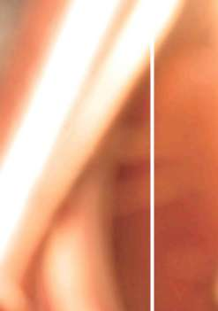
BÖLÜM
/
BÖLÜM
BÖLÜM
ADLİ TAHKİKAT SÜRECİ
10. BÖLÜM: ADLİ TAHKİKAT SÜRECİ
Adli tahkikat gerektiren tüm olaylarda; elbette ki Cumhuriyet Savcılarının verdiği emirler ve talimatlar doğrultusunda hareket edilecektir. Kanunlarımıza göre tahkikat sürecinde Cumhuriyet Savcıları kolluğun adli amiridir. Ayrıca Yeni Ceza Muhakemesi Kanunu’nda yapılan düzenleme ile kolluğun suç soruşturmalarına ilişkin sorumluluklarını ve görevlerini belirleyen Adli Kolluk
sistemi getirilmiştir.
Ancak kolluk kuvvetleri özellikle gasp olayları ile ilgili soruşturma yürütürken Cumhuriyet Savcıları ile daha koordineli çalışmalıdır. Soruşturmanın her aşamasında savcılar bilgilendirilmeli ve alınan emirler yerine getirilmelidir.
Soruşturmacı yapmış olduğu tahkikatın adli süreceni takip etmeli, gelişmeler hakkında bilgi edinmelidir.
Ayrıca bu durum soruşturmacıya yapacağı tahkikatlar açısından deneyim kazandıracaktır.
EKLER
EK - 1: KURS SONU SINAV SORULARI
EK - 2: İFADE ALMADA PERFORMANS KRİTERLERİ
VE GÖZLEMLEME
EK - 3: ÖRNEK OLAYLAR VE GRUP ÇALIŞMALARI
EK - 4: İFADE ALMA SAFHALARI (TABLO)
EK - 5: EĞİTİCİ PERSONELİN
DEĞERLENDİRİLMESİ (TABLO)
EK - 6: KURS PROGRAMI DEĞERLENDİRME
ÖLÇEĞİ
EK - 7: PROGRAMIN HAZIRLANNASINA VE
UYGULANMASINA İLİŞKİN GÖRÜŞLER

EKLER
KURS SONU SORULARI
1. Aşağıdakilerden hangisi mutemetlerin gaspı için yanlıştır?
E K - n
a) Soygun ani bir kararla gerçekleşir
b) Genellikle çalıntı, kiralık veya çalıntı plakalı araç kullanılır.
c) Mutemedin/kuryenin hareketi takip altına alınır d) Mutemedin/kuryenin silah tehdidi ve zorla araca alınarak kaçırılma¬sı da mümkündür
2. Aşağıdakilerden hangisi PTT ve Banka gaspı için yanlıştır?
a) Banka ve Ptt soygunları çoğunlukla profesyonellerin işidir b) Kaçış yolu ve araçları planlanır
c) Amaca uygun hazırlıklar yapılır
d) İşe girmeden önce keşif yapılmaz
3. Aşağıdakilelerden hangisi doğrudur?
a) Para nakleden araçlarda yola set koyulmaz b) Para nakleden araçlar takip edilmez
c) Para nakleden araçlar silah tehdidi ile soyulur d) Para nakleden araçlarda içeriden yardım alınmaz 4. Aşağıdakilerden hangisi yanlıştır?
a) Soruşturmacının olay yerini görmesi gerekir b) Elde edilen bilgiler mağdur/maktul yakınları ile paylaşılır c) Olay yerinden ayrıldıktan sonra mutlaka bir resmi ekip olay yerinde bırakılmalıdır
d) Sokak çalışması ile teknik çalışma birlikte yürütülmelidir 5. Aşağıdakilerden hangisi olay yerinde yapılacak işlerden değildir?
a) Zamanın Yazılması
b) Güvenliğin Sağlanması
c) Olay Yerine Uygun Giriş
d) Güvenlik Şeridiyle Çevirmeme
6. Aşağıdakilerden hangisi olay yerinde yapılacak ilk işlerden değildir?
a) Mağdurun yaşayıp yaşamadığına bakılır
b) Suçu ihbar eden kişinin kimliğini tespit edilir c) Suç yerini muhafaza altına alınır ve derhal amirlere haber verilir d) Olay yerine Cumhuriyet savcısı gelene kadar beklenir 85

EKLER
7 . A şağıdakilerden hangisinde gasp olaylarının büyük çoğunluğunda rastlanan unsurlardan değildir?
a) Seçme Prosedürü
b) Giriş Yöntemi
c) Güç Kullanım şekli
d) Kıyafet
8. Seçme prosedürü nedir?
a) Gasp yapılacak yerin seçilme şekli
b) Gasp yapma şekli
c) Olay yerine giriş şekli
d) Kullanılan gücün şekli
9. “Bu bir soygundur” hangi prosedüre uyar?
a) Giriş Yöntemi
b) Güç kullanım şekli
c) Seçme Prosedürü
d) Olay yerine giriş şekli
10. Aşağıdakilerden hangisi suçlu özelliklerinden değildir?
a) Profesyonel sürekli suçlular
b) Amatör aralıklı suçlular
c) Güç Kullanım şekli
d) Özel amaçlı suçlular
1 1 . Aşağıdakilerden hangisi Profesyonel sürekli suçluların özelliklerin-dendir?
a) Genel olarak gasp suçunu hayatlarının işi olarak görür b) Genelde suçluların en cesur ve “maçoları” oldukları izlenimini bırakmazlar c) Yüksek bir statü sahibi değildirler
d) Profesyonel olmayan suçluların on katı suç işlerler 12. Aşağıdakilerden hangisi masa başı çalışmalarından değildir?
a) Suç kayıtları
b) UYAP sorgusu
c) HTS çalışmaları
d) Kullanılan suç aletleri
EKLER
13. Aşağıdakilerden hangisi sokak çalışmalarından değildir?
a) Kullanılan suç aletleri
b) Tanıkların beyanları
c) Mahalli araştırmalar
d) Suç kayıtları
14. Aşağıdakilerden hangisi soruşturmada dikkat edilmesi gereken kurallardan değildir?
a) Yakalama esnasında yakalanan kişiyle kesinlikle mülakat yapmamalıdır b) Yakalama yapan ekiple soruşturma yapan ekibin imkan varsa aynı ekip olmasına dikkat edilmelidir
c) Şüpheli şahıslarla mülakat yapıldığı esnada, şüphelinin kişiliğini ve karakterini iyi analiz edilmelidir
d) Mülakat odasına cep telefonu ile girilmelidir 15. Aşağıdakilerden hangisi soruşturmada dikkat edilmesi gereken hususlardan değildir?
a) Soruşturma bilgileri mağdur veya maktül yakınları ile asla paylaşılmamalıdır
b) Elde edilen bilgiler ilgisiz kişilere (meslektaş, vatandaş vs.) söylenmelidir c) Faili meçhul dosya belirli periyotlarla yeniden okunmalıdır d) Alınan bütün ifadeler dikkatli okunmalı ve analiz edilmelidir 16. Herhangi bir olayla ilgili ifade vermek istemeyen görgü tanığına kolluğun davranış şekli aşağıdakilerden hangisidir?
a) Kimlik tespitini yaparak, soruşturma evrakında belirtir b) İfadesini zorla alır
c) Hiçbir şekilde alamaz
d) Kimlik tespitini yapar, ertesi günü gidip ifadesini alır.
17. Soruyu aşağıda ki metne göre cevaplayın; Olayla ilgili herhangi bir delil olmamasına rağmen görevlinin “Bak arkadaş zaten olay yerinden parmak izin düştü, kamera kayıtları da var, ifade vermen senin açından iyi olur” Şeklinde şüpheli şahsın ifadesinin alınmaya çalışılması, yasak sorgu usullerinden hangisine aittir?
a) Aldatma
b) Yorma
c) Kanuna Aykırı vaatte bulunma
d) Hile


EKLER
18. Kollukta şüphelinin ifadesi alınırken en fazla kaç müdafi hazır bulunabilir?
a) 1
b) 2
c) 3
d) 4
19. IMSI (INTERNATIONAL MOBILE SUBSCRIBER IDENTITY) nedir?
a) Telefonun numarası
b) Sim kartın numarası
c) Telefonun sahiplik bilgisi
d) Telefonun seri numarası
20. IMEI nedir?
a) Telefonun numarası
b) Telefonun sahiplik bilgisi
c) Sim kartın numarası
d) Telefonun seri numarası


EKLER
İFADE ALMADA PERFORMANS KRİTERLERİ VE GÖZLEMLEME
1. Planlama ve hazırlık safhası
- Alınacak ifadenin konusu belirlendi mi?
EK-2
Evet……. Hayır…….
- Suç unsurları üzerinde düşünüldü mü?
Evet……. Hayır…….
- Taktiksel çeşitlilikler üzerinde çalışıldı mı?
Evet……. Hayır…….
- Delillerin türü ve kapsamı belirlendi mi?
Evet……. Hayır…….
- İfade verecek şahsın olaydaki rolü belirlendi mi?
Evet……. Hayır…….
- Kişinin geçmiş polis kayıtlarına bakıldı mı?
Evet……. Hayır…….
- Beklenen ifade verme davranışının gerekçeleri, uygulanacak ifade almanın stratejisi, taktiği ve yöntemi seçildi mi?
Evet……. Hayır…….
- Suçun hazırlığı ve planlaması, işleyiş şekli, örtbas edilişi, şüpheli - mağdur ilişkisi (Kurbanbilimi), suç aletlerinin akıbeti, sebep, neden ve gerekçeli üzerinde çalışma yapıldı mı?
Evet……. Hayır…….
- İfadenin tarihi, aciliyet durumu, ifadesi alınan kişinin sağlık durumu, ifadenin verimliği üzerinde değerlendirme yapıldı mı?
Evet……. Hayır…….
- İfade alınacak yerin tespiti ve rahatsız edilmeyi önleme işlemi yapıldı mı?
Evet……. Hayır…….
- İfade ye katılacak kişiler belirlendi mi? (ifadeyi alacak memurlar, çocuklar, gençler, kadınlar, tercümanlar ve avukat gibi) Evet……. Hayır…….
- İfade alma işleminin akış planlaması yapıldı mı?
Evet……. Hayır…….
2. Uygulama safhası
- Giriş konuşması yapıldı mı?
Evet……. Hayır…….
- İsmen tanışma ve ismine göre hitap yapıldı mı?
Evet……. Hayır…….


EKLER
- Karşılıklı saygı ve güvenin sinyali verildi mi?
Evet……. Hayır…….
- İşbirliğine hazırlık kazanılacak ve teşvik edilecek eylemler yapıldı mı?
Evet……. Hayır…….
- İfade vermeye hazır olmasını artırmak, olası korkuları ve dirençleri yıkmak için, ifade alma işleminin resmi akışının açıklaması yapıldı mı? Soruların ve kanıt taleplerinin nasıl istenmesi gerektiğine dair roller, beklentiler ve olasılıklar açıklandı mı?
Evet……. Hayır…….
- Kimliklerin tespiti ve kontrolü yapıldı mı?
Evet……. Hayır…….
- İfadeyi alan ve ifadeyi veren kişi arasındaki ilişki nasıl değerlendirilebilir, sorunlar var mıydı?
Evet……. Hayır…….
- Bu sorunlar engellenebilir miydi?
Evet……. Hayır…….
- Hukuki bilgilendirme doğru yapıldı mı?
Evet……. Hayır…….
- İfade de bulunan avukat ile ilişki nasıldı? Bir saygı ortamı yaratmak mümkün oldu mu?
Evet……. Hayır…….
- İfade veren kişinin serbest açıklama yapması sağlandı mı?
Evet……. Hayır…….
- İfade veren kişinin açıklamaları aktif dinlenildi mi, sorular sorularak bölündü mü ve bu bölünmelerin zamanlaması doğru oldu mu?
Evet……. Hayır…….
- İfadeye ara verildi mi ve aralar soru sorulmadan yapılabildi mi?
Evet……. Hayır…….
- İfadeyi alanın soru sorma tarzı nasıl değerlendirildi, ifadeyi verenin açıklamaları yeterince incelendi mi, bunlar üzerine sorular soruldu mu?
Evet……. Hayır…….
3. Derleme aşaması
- Olayın subjektif detayları yeterli derecede toplanıldı mı? (suçlunun olayın hakikatine karşı ruh durumu nedir, suça karşı tutumu nedir)?
Evet……. Hayır…….
- İfadeyi alanın kriminal taktiğe ilişkin davranışı nasıl değerlendirilmiştir.
İfadesi alınana belki “çok fazla” bilgi mi verildi, tanıkların ifadeleriyle ve gerekli tüm delillerle karşı karşıya getirilme doğru zamanda mı oldu?
Evet……. Hayır…….


EKLER
' İfade alma kendi içinde tutarlı mıydı ve yeterli derecede belgelendirildi mi? Önem arz eden bölümler sonradan anlaşılabilecek şekilde ifade edildi mi?
Evet……. Hayır…….
- İfade alma uygun bir şekilde bitirildi mi, ifadesi alınanla birlikte bir “durum değerlendirmesi” yapıldı mı?
Evet……. Hayır…….
- Kanuni hükümlere bağlı kalındı mı?
Evet……. Hayır…….
EKLER
r* ÖRNEK OLAYLAR VE GRUP ÇALIŞMALARI Genel Bilgiler
E K - 3
Hedef: Katılımcılar rol oyunlarına katılarak deneyimler kazanacak ve ifade aşamalarına uyarak ifade alma ve kayıt tutma üzerine alıştırma yapacaklardır.
Burada ifade alma aşamalarının ve kalite kriterlerinin özellikle eğitime nasıl yansıtılabileceği ve pratikte nasıl uygulanabileceği konusunda tartışılacaktır. (iyi olan nedir?, rahatsız eden şeyler ve eksik olan nedir?)
Metod: Küçük grupların sunumu ve tecrübe alış verişi yoluyla değerlendirme Görev:
1) Alıştırma konusundan yola çıkarak, polis soruşturmasının örneklerle hedeflerinin, safhalarının hazırlanması ve nedenleriyle açıklanması.
2) Rol oyunlarında ifade almanın esas safhaları gösterilecek, aynı zamanda hedefler ve metotlar geliştirilecek, ifadesi alınanın ve soru sorulanın farklı perspektiflerinden olaya bakması sağlanacaktır. Şu safhalar tasvir edilecektir: kontak safhası, açıklama, bilgilendirme, kişiyle ilgili sorular, serbest açıklama, soru sorma aşaması, suçlama ile karşılaştırma ve ifadenin sonuçlandırılması.
3) Soru soran kişiler, kendi açılarından iyi olan şeyleri ve hangi becerilerinin üzerinde daha fazla çalışmalarının gerektiğini değerlendireceklerdir.
4) Diğer katılımcılar gözlemci olacaklardır.
5) Değerlendirme safhasında rol oyunundan ortaklaşa elde edilmiş tecrübeler ile bunların nasıl pratiğe geçirilebileceği tartışılacaktır.
Örnek Olaylar ve Senaryolar
Örnek Olay :
İyi giyinmiş bir erkek (Şüpheli 1), 10.03.2008 tarihinde, saat 08.15’de Ankara’nın canlı bir alış veriş sokağındaki antikacı dükkanına müşteri olarak giriyor. Tezgahtar bayanla birlikte dükkanda olan dükkan sahibine, maddi açıdan değerli altın ve gümüş mücevherler aradığını söylüyor. Dükkan sahibi kasadan seçkin özel mücevherler getireyim diyor. Dükkan sahibinin kasadan mücevherleri almaya gittiği sırada müşterinin(Şüpheli 1) cep telefonu çalıyor ve “her şey yolunda” diyor. Dükkan sahibi elinde birkaç kadife kaplı tepsi içerisindeki mücevherleri gösterme amaçlı kasadan getirdiği anda, dükkana iki erkek şahıs giriyor. Her biri bir siyah deri pilot çanta taşıyor.
1 numaralı Şüpheli dükkan sahibine ve tezgahtar bayana şunu söylüyor;
“Sakin olun! Kimseye zarar gelmeyecek. Sadece bizim talimatlarımıza uyun ve direnç göstermeyin!”
EKLER
2 numaralı Şüpheli öncelikle birisinin girmesini önlemek amacıyla kapıda kalıyor.
3 numaralı Şüpheli tezgahtar kıza doğru aceleyle gidiyor ve onu ne kendini kurtarabileceği, ne de yardım çağırabileceği bir konumda tutuyor. Kızı büroya itekliyor, onun ellerini ve ağızını yanında getirdiği bant ile bağlıyor.
1 numaralı Şüpheli dükkan sahibine tabanca doğrultuyor ve dükkan ve kasa anahtarını vermesini istiyor.
2 numaralı Şüpheli dükkan anahtarını alıyor, giriş kapısını kilitliyor ve kapıya asılı tabelayı dışa doğru çeviriyor: “Biraz sonra dönerim!”
1 numaralı Şüpheli dükkan sahibini büroya itekliyor ve kasayı açtırıyor.
2 numaralı Şüpheli yanında getirdiği bant ile dükkan sahibini bir koltuğa bağlıyor sonra ağzını bantlıyor.
3 numaralı Şüpheli iki mağduru denetliyor, bu arada 1 ve 2 numaralı Şüpheliler dükkanın yazar kasasından ve kasadan nakit paralar ile değerli mücevherleri topluyorlar.
Para ve mücevherleri beraberlerinde getirdikleri siyah deri bavullara ve dükkan sahibinin olan bir kahverengi deri bavula saklıyorlar. Bu sırada Dükkan sahibi bağlı bulunduğu yerden kurtularak şüphelilerin üzerine saldırıyor, Şüpheli 1 elinde bulunan tabanca ile dükkan sahibini öldürüyor, sonra dükkanı terk ederken Şüpheliler dükkanın kapısını kilitliyorlar. Bu durum karşı tarafta olan bir dükkanın sahibinin dikkatini çekiyor. Bu tanık, bu üç kişinin dükkanın fazla uzağında olmayan, sürücüsünün arabada beklediği, kırmızı bir arabaya aceleyle bindiklerini görüyor. Arabayı park yerinden çıkartmaya çalışırken, arabanın sürücüsü yandan akan trafik sebebiyle sağ ön çamurluğu bir trafik işareti direğine çarpıyor. Tanık hızla arkadaşının dükkan kapısına geliyor ve dükkanın kapısını açmaya çalışıyor. Telefon yoluyla da arkadaşına ulaşmayı başaramadıktan sonra polise haber veriyor ve bir suç işlendiğine dair şüphesini beyan ediyor. Polis, tanığın yaptığı araç tanımından yola çıkarak, araç sahibinin daha once suç işlememiş, 29 yaşında bir erkeğin olduğunu ortaya çıkarıyor.
Görev:
İfade almanın planlaması ve hazırlığını yapınız. Alacağınız genel talimatlara göre ifade almanın herbir safhasına göre rol oyunlarını oynayınız. Grup içinde olmayan aktörler gözlemci olarak görev alacaklardır. Gözlemcilerin görevi oynanan rolleri dikkatlice izlemek ve bu arada aşağıdaki sorulara cevap vermektir:
- Neler pozitif yaşandı?
- Uygulama için hangi alternatif olanaklar düşünülebilir?
- Nerede değişiklik olması gerektiğini düşünüyorsunuz?
Aktörlerin oyunun aşamalarında yaşadıklarına dikkat etmeleri ve bunlardan ne tür deneyimler elde edebileceklerini anlamaları gerekmektedir. Birlikte pratiğe neyin geçirilebileceği değerlendirilecek ve nelerin zaten pratikte uygulanmakta olduğu tartışılacaktır.
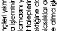
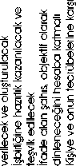
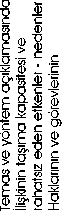
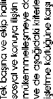
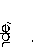

EKLER
EK
EKLER
rft/i
>ıoö
VİİIO
E K -
zv
ÖIH
rft/i
>ıoö
VİİIO
zv
ÖIH
rft/i
>ıoö
VİİIO
zv
ÖIH
rft/i
>ıoö
VİİIO
zv
ÖIH
rft/i
>ıoö
VİİIO
zv
ÖIH
0)
>
ü
c
<
-
[ -
[ -

EKLER
r» KURS PROGRAMI DEĞERLENDİRME ÖLÇEĞİ
Aşağıda kişisel durumunuzla ilgili 8 soru bulunmaktadır. Her bir soru için durumunuza uygun olan seçeneğe ait parantez içerisine (X) işareti koyunuz.
Lütfen tüm soruları cevaplayınız.
1-Cinsiyetiniz ( ) Kadın ( ) Erkek
2-Yaşınız
( ) 21-30 ( ) 31-40 ( ) 41-50 ( ) 51-60 ( ) 61 ve üstü 3- Öğrenim durumunuz
( ) Lise Mezunu
( ) Polis Okulu Mezunu
( ) Ön Lisans Mezunu
( ) Lisans Mezunu
( ) Polis Akademisi mezunu
( ) Diğer (Belirtiniz) …………………………………
4- Mesleki kıdeminiz
( ) 1-5 yıl
( ) 6-10 yıl
( ) 11-15 yıl
( ) 16-20 yıl
( ) 21 yıl ve üstü
5- Çalıştığınız birim (Lütfen yazınız) ………………………………………………
6- Daha önce hizmetiçi eğitim programına kaç kez katıldınız ?
( ) Hiç katılmadım
( ) Bir
( ) İki
( ) Üç
( ) Dört
( ) Beş ve üzeri
7- Biriminizdeki görev süreniz ?
( ) 1-5 yıl
( ) 6-10 yıl
( ) 11-15 yıl
( ) 16-20 yıl
( ) 20 yıl ve üstü


EKLER
PROGRAMIN HAZIRLANNASINA VE UYGULANMASINA İLİŞKİN GÖRÜŞLER
Aşağida katıldığınız hizmet içi eğitim programının yürütülmesine ilişkin 11
ifadeye yer verilmiştir. Sizden her bir ifadenin tanımladığı faktörlerin yeterlilik durumunu ifadenini karşısında yer alan seçeneklerden uygun olanını işaretle-yerek belirtmeniz beklenmektedir.
Lütfen tüm soruları cevaplayınız.
Hiç Az Orta Çok Tam
1.
Konuların, programın amaçlarına göre
( ) ( ) ( ) ( ) ( )
yeterli olma derecesi
2.
Program uygulama hazırlıklarının (prog
( ) ( ) ( ) ( ) ( )
ram duyurusu, döküman oluşturma
v.b.) yeterle olma derecesi
4.
Günlük çalışma süresinin yeterli olma
( ) ( ) ( ) ( ) ( )
derecesi
5.
Program için ayrılan toplam sürenin
( ) ( ) ( ) ( ) ( )
yeterli olma derecesi
6. Öğretim için sağlanan ortamın yeterlmi
( ) ( ) ( ) ( ) ( )
olma derecesi
7. Konularla ilgili not, kitap ve diğer öğre
( ) ( ) ( ) ( ) ( )
tim araçlarının yeterli olma derecesi
8. Yemek ihtiyaçlarının karşınabilme dere
( ) ( ) ( ) ( ) ( )
cesi
9. Program süresince düzenlenen sosyal
( ) ( ) ( ) ( ) ( )
etkinliklerin yeterli olma derecesi
10. Program süresince düzenlenen sosyal
( ) ( ) ( ) ( ) ( )
etkinliklerin yeterli olma derecesi
1 1 . Eğitim yöneticisinin-koordinatörünün kursi
( ) ( ) ( ) ( ) ( )
yerlerle ilişki kurmadeki yeterlilik derecesi
*Bu bölümde yer alan sorulara verdiğiniz cevaplar dışında ayrıca belirtilmesinde yarar gördüğünüz konuları, soruları ve önerilerinizi lütfen yazınız.
……………………………………………………………………………………………………………
……………………………………………………………………………………………………………
……………………………………………………………………………………………………………
……………………………………………………………………………………………………………
……………………………………………………………………………………………………………
……………………………………………………………………………………………………………..
……………………………………………………………………………………………………………..